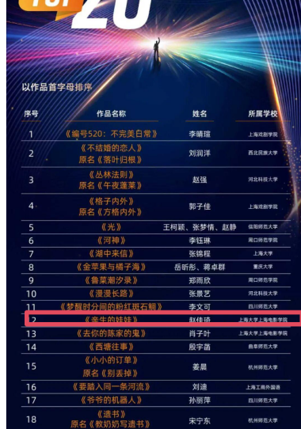

其他未拍摄作品
《亲生的娃娃》
类型：家庭、留守儿童、儿童
故事梗概
《亲生的娃娃》讲述了一个名叫小舟的男孩在怀疑自己是否被父母亲生所困扰的过程中，逐渐理解亲情本质的故事。
小舟生活在一个海边村庄，父母常年在外打工，他和听力不好的爷爷一起生活。一天，邻居女孩告诉他“你不是你爸妈亲生的”，这句话像一颗种子在他心中生根发芽。他先后向爷爷、邻居孙阿姨求证，孙阿姨半开玩笑地告诉他“你是从垃圾桶捡来的”，并提到了滴血认亲和亲子鉴定。
小舟信以为真，开始偷偷寻找证据。他翻找父母的房间，观察自己与家人的外貌差异，甚至尝试用针取血做滴血认亲试验，结果血水被不知情的爸爸喝掉。他还偷藏了父母的车票，试图获取他们的头发去做亲子鉴定。
在一次家庭冲突中，爸爸因找不到车票打了小舟，小舟愤而跑出家门，父母追出。在夜色中，小舟终于吐露心声：“为什么你们总是不在家？我经常很想你们。”父母也在这过程中理解了他的不安与渴望。
结尾处，爷爷悄悄拿出藏起的车票，原来他同样希望一家人多团聚几天，我们只注意到小舟是留守儿童却忘记了爷爷也是在家守望着盼着团圆的留守老人。故事在小舟与父母的和解中落下帷幕。
2.创作阐述
《亲生的娃娃》是一个关于怀疑、孤独与爱的故事，它以一名留守儿童的身世之谜为切口，探讨了亲情的本质并非血缘，而是陪伴与理解。
剧本的灵感来源于农村地区普遍存在的打工家庭现象，那些常年与祖辈生活在一起的孩子，往往会在某个瞬间产生我是不是亲生的这种看似荒唐却无比真实的疑问。小舟的怀疑，表面上是女孩一句玩笑话引发的连锁反应，实际上是他内心深处对父母长期缺席的不安与渴望的变形表达。他真正在意的不是生物学上的亲子关系，而是为什么你们总是不在我身边。因此，整部剧本的叙事动力并非解开一个悬疑谜题，而是陪伴小舟走过一场情感上的认亲之旅——他最终确认的，不是血液的融合，而是父母追逐他的脚步、夜色中的拥抱、以及那些琐碎而真实的回忆。
在人物塑造上，小舟是一个敏感、执拗又不失天真的孩子。他会在衣柜里翻找、扒开自己的眼睛对比照片、模仿父母的表情，这些细节呈现出孩子式的“取证逻辑”，既好笑又令人心疼。他不是一个被动等待答案的受害者，而是一个主动探索的小小冒险家，这种性格让他在后来的冲突中敢于跑出家门，也敢于在父母面前说出“我想去医院做亲子鉴定”这样稚拙又勇敢的话。爷爷作为他日常的陪伴者，看似沉默、耳背、只会微笑和做饭，却在结尾成为最大的情感转折点——那两张被藏起来的车票揭示了一个秘密：爷爷同样渴望一家人多团聚几天。他不仅是留守儿童身后的留守老人，更是这个家庭中另一个无声的思念者。
从现实关怀的角度看，《亲生的娃娃》没有刻意控诉社会问题，而是通过一个孩子的视角，温柔地呈现了打工家庭内部的复杂情感。邻居孙阿姨是好心却不够谨慎的善意谎言者，父母是迫于生计却仍深爱孩子的劳动者，爷爷是默默守护却又渴望团圆的老人。每一个人物都有其合理性，没有绝对的错误方，只有被距离拉开的思念。结尾处爷爷藏起车票的细节，更是将团聚的愿望推向了超越代际的层面——不是小舟一个人需要父母，而是整个家庭都需要彼此。
3.获奖证明

4.完整剧本
《亲生的娃娃》
场景一 日 外 山坡/路上
黄昏，山坡路上，一个男孩和一个女孩面对面。女孩看着男孩认真地说。
女孩
你不是你爸妈亲生的——真的，你不是亲生的。
男孩
你骗人。
女孩你爱信不信。
男孩嗫嚅着嘴唇，没等说出话，女孩转身离开，男孩在原地站了几秒后，飞快地飞奔回家。
场景二 日 外 院子门口
男孩爷爷正靠着藤椅挑种子（水稻种子）。
男孩从远处的路口跑回来，男孩跑得浑身是汗。在爷爷面前站定后，喘着粗气。
男孩
爷，我是爸妈亲生的吗？
爷爷微笑着看着孙子不说话（听不见）。
男孩凑到爷爷耳边喊。
男孩(超大声)
爷，我是我爸妈亲生的吗？！
爷爷
哦（摆摆手）， 明白了——男孩期待地看着爷爷。
爷爷
这种子肯定是生的，熟的种不出来。
男孩我是不是亲生的。爷爷微笑，摊手指指耳朵听不到。
男孩
(讽刺)
爷啊——你这个耳朵啊真是牛批。
爷爷给孙子脑袋一下。
爷爷起身走进院子去做饭。
男孩
我要吃西红柿炒鸡蛋。
爷爷
好。
场景三 日 内 爸妈房间
屋外爷爷炒菜的声音。
男孩钻进衣柜里找，扯出来衣服再一股脑塞进去。
男孩掀开床垫一角。
男孩踩着凳子去摸柜子上的相册。
拿下来一本落灰的结婚相册，男孩翻开，里面是爸妈结婚照。
男孩对着镜子模仿爸爸的神情呲牙咧嘴，又模仿妈妈高贵美丽的样子。
男孩看着照片，皱眉思考。摸摸爸妈照片上的眼睛然后发现自己的眼睛太小了，再扒开自己的眼睛。
爷爷
吃饭喽。
男孩抽出一张双人照，放进自己的口袋里，又迅速把相册放回去。
场景四 日 外 院子
爷爷和男孩吃饭。爷爷端着菜。
爷爷
吃吧，你点的，青瓜炒鸡蛋。男孩无奈地扒拉着嘴里的饭。观察、注意到爷爷的眼睛也很大。
男孩
爷啊，为啥你的眼睛和爸爸的都那么大，妈妈也是，怎么只有我的这么小。
爷爷
啥子？是想你爸妈了吧，他们上周来电话说端午就回来夏种。
男孩听了以后放下碗跑回房间，翻日历表，翻了一页后发现，明天就是芒种。
男孩(大声地)
你之前怎么没说啊？
爷爷微笑着给男孩夹菜。男孩郁闷的几口吃干净背上包就出门了。
场景五 日 外 山坡上/河边
黄昏，树上的大喜鹊叼着食回窝喂给小喜鹊。
男孩坐在河边/山坡上，看着课本，课本中间是爸妈的照片，左边是一篇文章。男孩把书本盖在脸上，开始背诵课文。
男孩
我从不肯妄弃了一张纸
总是留着——留着，
叠成一只一只很小的船儿，
从舟上抛下在海里。
有的被天风吹卷到舟中的窗里，有的被海浪打湿，沾在船头上。我仍是不灰心地每天叠着，
总希望有一只能流到我要它到的地方去。
父亲母亲，倘若你梦中看见一只很小的白船
儿，
不要惊讶它无端入梦。
这是你至爱的孩子含着泪叠的，
万水千山，求它载着他的爱和悲哀归去。男孩可以叠小船在河边（如果是在山上就叠纸飞机）
场景六 夜 外 村子大树下
傍晚，天空的蓝调时刻。
一个妇女（孙嬢嬢）正在院子门口树下剥花生。
男孩走过去后，孙嬢嬢递给他一把花生，把他拉在身边。
孙嬢嬢作业写完啦？
男孩
孙嬢嬢，你小时候认识我爸妈吗？
孙嬢嬢
那肯定的，我们是光屁股长大的啊。
男孩
那没有生我之前，你也认识他们。
孙嬢嬢是啊。
男孩挥手示意孙嬢嬢过来要说悄悄话，孙嬢嬢把头凑过去。
男孩
我不是我爸妈亲生的？
孙嬢嬢
(震惊地看他一眼憋笑)
男孩
到底是真的假的。
孙嬢嬢(假装认真)
谁这么讨厌，怎么能让你知道呢？
男孩所以，都是真的啊。
孙嬢嬢
唉，想当年一个特别冷的冬天，你爸去丢垃
圾，你在垃圾桶里哇哇哭，你爸就给你抱回家了。
男孩
原来真是这样，我是捡来的。
孙嬢嬢
哈哈哈哈哈哈，诶哟——你还真信啦？嬢嬢逗呢。
男孩
你不用安慰我，我早就感觉他们有问题了。
孙嬢嬢(继续笑)
你这孩子不禁逗啊。
男孩低头不讲话。
孙嬢嬢
你要不信，你去滴血认亲，再不行你去医院做亲子鉴定啊，它不会骗人。
男孩
什么是滴血认亲？
孙嬢嬢
你有看电视剧里头演嘞啊？把你和你爹妈嘞血滴滴在一个碗头，等哈哈儿要是融归一坨喽，就是亲嘞。
男孩那什么是亲子鉴定？
孙嬢嬢
亲子鉴定嘛，就是拿你们嘞头发去医院配对，配得上嘞就是亲生嘞！
男孩
(点头)
这保准吗？
孙嬢嬢
科学啊，科学是铁定不会错嘞学问——哎哟！我跟你扯这些搞哪样嘛？莫乱想喽，赶紧转回家！
男孩
你别告诉别人——拉钩。
孙嬢嬢和男孩拉钩。
男孩＋孙嬢嬢拉钩上吊一百年不许变。
场景七 夜 内 卧室
深夜，男孩和爷爷已经休息了，男孩睁开眼睛看着熟睡背对着他开始打呼噜的爷爷。
男孩从爷爷身上跨过去，面对面爷爷，用手去拉爷爷的手。
男孩
(掉眼泪)
就算他们不是我的亲爸妈，你也是我的亲爷爷，我舍不得你。
爷爷很大声地打呼噜。
男孩说完就开始掉眼泪。
场景八 日 内 房间
第二天一早男孩起床后，发现堂屋里有爸妈的行李，男孩知道是爸妈回来了，扭头盯着爸妈房间的门。
男孩回忆起孙嬢嬢的话，男孩走到厨房挖了一碗水。端着水到了爸妈房间。爸爸妈妈正躺在床上熟睡。一个黑色的挎包放在床头柜上。
男孩静悄悄地在地上爬着走，挪到床边以后，刚抬起头，爸爸打呼噜。
男孩被呼噜声吓的赶紧趴在地上，静置一会后男孩爬起来准备扎爸爸手指头，刚一下 针，爸爸哼唧一声翻了个身。
男孩趴下又爬起来后终于找到一个地方下了针，顺利出了一滴血，男孩用碗接过来，然后把碗放在床头柜上，扎自己一下，两滴血沉入水中。
男孩回想起孙嬢嬢的话：
孙嬢嬢
等哈哈儿要是融归一坨喽，就是亲嘞。
男孩回头看着熟睡的爸爸，把脸凑得很近，观察爸爸。这个时候爸爸突然张开眼睛，被男孩吓一跳。
爸爸
你个憨包！你啷个回事？！
男孩下意识用身体挡住水碗。
爸爸你躲哪样？
爸爸一把拉开男孩。看到水碗，直接端起来。
爸爸
嘿！晓得给你家爹送水嘞，会来事哦，刚好我口干得很！
爸爸拿起碗一口干了。男孩接过碗，碗里空空。
爸爸
等一哈儿和我们去地头干活，听到没得？男孩低着头端着碗。
场景九 日 外 田地
男孩低着头拎着水桶，男孩躲到父亲几步远的树荫底下。
男孩爸爸戴着帽子开始在地里耕地。
爸爸
过来！男孩走过去。
爸爸
倒一点
男孩按照父亲的话做，倒完以后又跑回树荫地下。爸爸耕好下一个坑以后，转身发现男孩又跑到树下去了。
爸爸
过来！
男孩跑过去到了一点，刚准备跑回去，被爸爸揪住衣服。
爸爸
不许动，就站在这儿。
男孩瞪着爸爸。
爸爸往前继续走刨下一个坑，示意男孩倒水。发现男孩还站在原地。
爸爸你杵在那干嘛？
男孩
你说得不许动，我就站在这儿!
爸爸
你咋个憨包兮兮嘞？这点事都搞不懂！我让你跟着我倒水。
男孩跟着爸爸，然后爸爸还没等刨坑就把水泼了，爸爸用手一挡，水洒了满地。
爸爸
诶呦——搞点事情恼火完，爹不像娘不像，天晓得你随哪边老祖宗？
男孩噘着嘴小声嘟哝。
男孩反正你也不是我爸。
爸爸
啥子？男孩赶紧摇摇头。
爸爸
搞快点喽，整完回家吃饭喽！
爸爸说完以后，发现天上太阳太大男孩脸晒得红红的，摘下帽子戴在男孩头上。
场景十 日 外 田间小路
黄昏夕阳西下，男孩父亲挑着锄头，男孩在后面戴着父亲的帽子拎着水桶，和父亲保持一段距离往家走。
场景十一 日 外 院子
院子门的门框分隔开两个场景，以门框为界限。
门框外爷爷坐在院子门口，男孩蜷着腿坐在爷爷旁边。
门框内扎着围裙的妈妈正在往桌上端饭，爸爸帮妈妈端菜。
妈妈
老爹，儿嘞吃饭喽——
场景十二 日 外 院子内
大家围桌吃饭。
爸爸给爷爷倒满酒， 自己也斟满，端起酒杯敬爸爸。
爸爸
老爹，多累你在屋头帮我们带娃娃喽，我和娟儿才得在外头安心赚钱嘞。
妈妈
(端起酒杯)
是啊，平常你也自家顾好身体，平该花花，我们还能赚。
爷爷微笑，端起酒杯。大家干杯。
妈妈注意到一直低头的男孩。
妈妈
咋不吃菜呢？想吃什么？我再去给你做。
爸爸
别管他，白天干活的时候就给我找别扭，这孩子一点都没长大。
妈妈瞪了爸爸一眼，夹着盘子里的菜到男孩碗里。
男孩头低得快到地上去了。
爷爷
你们什么时候回去？买票了吗？
妈妈
后天就走，已经买票了。
爸爸爸你有啥事儿？
爷爷不说话继续微笑吃饭。
妈妈
军呐，我们后天就走了，你在家听爷爷话，上学好好读书，将来考大学。
爸爸
(不自然地咳嗽用眼神示意妈妈)
妈妈会心一笑，起身回屋子里，拿了一个你的书包送给男孩。
妈妈
你爸爸给你挑的，小军最喜欢的蓝颜色。
男孩拿着书包掩饰不住地开心。
妈妈
喜欢吗？男孩用力地点头。
妈妈
一会你给妈妈背你新学的课文好不好？
男孩
好——一家人继续吃饭。
场景十三 夜 内 房间
男孩和妈妈在院子里妈妈坐在藤椅上，男孩背着新书包，拿着书站在妈妈旁边，爸爸在房间里。
男孩
父亲母亲，倘若你梦中看见一只很小的白船儿，
不要惊讶它无端入梦。
这是你至爱的孩子含着泪叠的，
万水千山，求它载着他的爱和悲哀归去。男孩背课文的时候，妈妈一脸慈祥地看着他。
妈妈(鼓掌)
背得太好听了，快把书包放下吧，上学再背。男孩笑着摇头，反手摸了摸新书包。
男孩
妈妈，我有个问题想问你。
男孩爸爸走出来，刚好打断男孩的话。
爸爸
车票放哪里了？我看看时间提前订车出村子。
妈妈床头的包里。
男孩爸爸转身回去。
妈妈你想问什么？
男孩我是你们亲生的吗？
妈妈为什么问这个？
男孩爸爸从房间里冲出来边走边说。
爸爸
在这个包里吗？没有啊——
妈妈
不可能啊，我就放夹层里了你再找找。
爸爸抖着整个包，掉出来几个硬币。
妈妈(接过包)
就在这儿的，不会是掉了吧。爸爸注意到一旁的男孩缩着脖子不敢看他。
爸爸
是不是你？是你拿走的。
男孩摇头。
爸爸
大早上你在屋里鬼鬼祟祟，我就感觉不对劲，快说票在哪？！
妈妈来拦住爸爸拽着男孩领子的手。
妈妈你松开！
爸爸
小兔崽子，爸妈回来也不亲，犯别扭一天了！你找打！
男孩爸爸抄起院子里的扫把，打到男孩腿上。
爸爸
我和你妈辛辛苦苦在外面干活，你就想着调皮捣蛋不听话是不是，一点都不懂心疼我们
妈妈一直拦着。
男孩挨了一下子之后，愤怒地跑出去，跑得飞快，一下子就不见了影。妈妈大声地喊男孩名字
妈妈小军！小军！
妈妈气愤地转向爸爸指着爸爸
妈妈
你一回来就打孩子啊，他可是你亲儿子！妈妈转身跑出门去追男孩。
爸爸回屋子拽了一件衣服跑出去。
场景十四 夜 外 路上
男孩在前面疯狂地跑，一边跑一边掉眼泪。
后面爸妈一直喊着小军的名字追男孩。
妈妈
小军！手电光晃到男孩。
男孩加速继续往前跑，一着急摔了个踉跄。脚丫顺着拖鞋前面的口整个都落在地上。
爸爸妈妈追，妈妈跑不动了速度变慢，爸爸跑，男孩摔倒后着急地跑过去一把抱住男孩。
爸爸小军啊——
妈妈跑过来
爸爸妈妈从两边抱着男孩。
场景十五 夜 外 路上
妈妈打手电，暖黄色的光照亮幽黑的小路。
男孩趴在爸爸身上，身上盖着爸爸的衣服。
妈妈
你小时候特别聪明，特别早就会说话了，你就是不说还总是逗我们。
男孩
嗯？
妈妈
我教你说蜘蛛，你就说蛛——蜘——然后我说洋芋，你偏要说芋——杨。
男孩哈哈哈哈哈哈啊。
妈妈
你刚才是要跑去哪啊？
男孩
我今天捡了你们的头发，我要去医院做亲子鉴定。
爸爸谁告诉你的啊？
男孩
孙嬢嬢说这是不会出错的学问。
妈妈
胡说，妈妈的话才是不会出错的学问，小军就是我们亲生的娃娃。那你能不能告诉我为什么你觉得你不是我们的孩子？
男孩
孙嬢嬢说我是垃圾桶捡的。
爸爸
孙嬢嬢十句话八句是假的——
男孩
那为什么我的眼睛这么小，你们眼睛这么大？
妈妈
我像你这么大的时候眼睛也是黄豆粒大小，长大就好了。
男孩
为什么爸爸说我和你们都不像？
爸爸
爸爸喝多了，我一喝酒就说胡话。
男孩
那为什么你们总是不在家，别人的爸爸妈妈都在家陪着他们，只有你们不在。
爸爸妈妈沉默一瞬。
男孩我经常很想你们。
场景十六 夜 内 房间
爷爷点开房间的灯，把藏在枕头底下的两张车票拿了出来放回黑色的包里。爷爷深深地叹了口气。
——完——
《海儿》
关键词：核废水、社会议题、现实主义
故事梗概
在日本核废水排海事件引发的恐慌背景下，辽宁一处小岛渔民大波一家面临着传统捕捞业即将崩溃的生存危机。九月一号正式开海，而日本排核废水的时间是八月二十六号。
大波捕捞的鲜鱼送往市场，却被告知因消费者恐惧核污染，鲜鱼价格暴跌，而冻货价格飙升。市场老板暗示，只有“饿死胆小的，撑死胆大的”才能在这场危机中获利。迫于家庭经济压力（妻子需要长期服药、儿子年幼），大波决定铤而走险：在禁渔期内，趁夜色与三名同伴秘密出海捕捞，企图利用核废水全面排海前的最后窗口期获取高价鲜鱼。临行前，妻子在院中设案焚香，祭拜海龙王以求平安。
大波一行人成功捕获大量鲜鱼并高价售出，获利颇丰。然而，当他们第二次趁夜出海时，被执法人员发现。大波拒绝停船接受检查，强行驶离。为躲避追捕，他们选择了一条不熟悉的多礁石航线。此时海上突降暴雨，船只最终在石沟子海域倾覆，四人全部遇难。
影片结尾，家中的儿子再次玩起扣着狗盆点炮仗的游戏，将一条小鱼放入盆中，炮仗炸响，狗盆飞向天空。一如核废水这个新闻如同炸弹一般扔进普通人家，引起轩然大波，应了那句：兴，百姓苦，亡，百姓苦。
创作阐述
2023年8月24日，日本福岛第一核电站正式启动核污染水排海。与此同时，对于海洋和海鲜的恐慌弥漫在我家乡的小城，我奶奶第一时间冲进商店屯了我们一家吃十年都吃不完的盐。这个荒诞又真实的画面让我意识到，我们正在经历一个特殊的历史时刻——恐惧不再来自可见的灾难，而是来自一个远方的、缓慢的、不可见的威胁。这种威胁改变了经济学最基本的供需逻辑，改变了人与海洋千百年来的契约关系，也改变了一个普通渔民家庭的全部生活。
《海儿》的故事就在这样的背景下生长出来。它不是一个简单的生态批判作品，而是一个关于普通人在不可抗力面前如何抉择的现实主义悲剧。我想通过一个渔民家庭在短短几天内的命运转折，呈现我们这个时代特有的焦虑、荒诞与无力感。
千百年来，海边渔民与海洋之间存在着朴素的信任关系：大海提供鱼虾，渔民付出劳动，市场完成交换。但在核废水排海的消息公布后，这个信任链条被彻底打断。剧本中反复出现的细节都在强化这一点：摊位老板明确说“24号以后，冻货最贵，鲜货呢，排核废水之前的大于排了之后的”；市场里冻货畅销而鲜货贬值；连妻子买盐的理由都只是给孩子吃。这些细节共同勾勒出一个荒诞的现实：未被污染的鲜鱼比不过冷冻的库存，自家晒的盐比不过商店里的包装盐，真实的劳动价值被一种无形的恐惧所覆盖。
更可怕的是这种恐惧的时间性。它不是对过去的悔恨，也不是对当下的判断，而是对未来的恐惧。剧本中多次出现的开海（9月1日）这个时间节点，与日本排海的时间（8月24日之后）形成了一种残酷的错位——渔民们等待了一年的捕捞季，在开始之前就已经被宣告不值钱了。大波面临的根本困境不是今天能不能捕到鱼，而是以后还有没有人敢吃。当未来本身变成了不确定的变量，一个靠海为生的人，还能往哪里去？
《海儿》不是一部关于渔民的戏，而是一部关于所有人的戏。因为我们每个人都可能成为大波——当不可抗力的历史洪流涌来时，我们以为自己可以选择，其实我们只是在如何承受的选项中打勾。这个剧本献给那些沉默的、挣扎的、被时代裹挟却从未被看见的普通人。他们不会出现在新闻头条里，不会成为网络热议的话题，他们的故事只存在于家庭的记忆和官方的通报中。但正是这些人，构成了这个时代最真实、最沉重的地基。
3.完整剧本
《海儿》
场景一 平房门口 日 外
平房建在几块晒盐的地中间。
孩儿在平房门口的小路上正点燃一个二踢脚，身后的平房烟囱正冒着炊烟。
孩儿迅速的点好火，用狗碗盖上，然后飞快的跑到院子门口捂好耳朵，瞪大眼睛紧盯着被狗盆盖住的二踢脚，院子里拴着的狗也眼睛亮亮的看着。
炮仗 pong 的一声，震天响。狗盆被震飞到天上，直直的砸下来。
院子里的狗急得团团转，汪汪的叫。
场景二 黑场
出字幕《海儿》
场景三 渔村小路 日 外
远处孩儿的爸爸大波骑着摩托车往家走，在家门口停止轰鸣，刹车停住。
大波从后座上卸下鱼框，往屋里走。孩儿在旁边帮忙拿着小桶，大波用大手拍了一下孩儿的后脑勺。
父子二人一前一后走进院子，一条鱼掉在狗窝旁边，狗开始啃食。
场景四 平房屋内 日 内
孩儿跑进进门右手边的房间，屋子里的小液晶电视正在播放《狂飙》高启强卖鱼那段。孩儿拿起遥控器开始换台。
大波站在屋门口把鱼框放下，妻子正在把饭菜端到客厅的圆桌上。
妻子
吃饭了！
大波在门口洗手，孩儿从右手边的屋子出来，电视调停的频道是新闻 13 台，正在播放关于日本排核废水的新闻。
一家人坐下吃饭，妻子开始倒水吃药。大波看妻子到的是凉水直接去拿了暖壶兑成冒着热乎气的。
大波
下周是不是得去复查开药了？
妻子点点头。
妻子
一号就开海了，我自己去就行。
大波
让桂枝陪你去。
妻子再次点点头，一家人开始吃饭。儿子一直在挑鱼吃，妻子给儿子夹青菜。
妻子
过一会我也想去排队买点盐。
大波皱皱眉。
大波
有必要吗？ 自己家就晒。
妻子
给孩子吃。
场景五 市场门口 日 内
大波骑车到市场门口，停车。后面有人按喇叭，大波回头发现是朋友辉子。
辉子停在大波旁边，大波正准备卸车。辉子笑着递过来一根烟。不容大波拒绝，辉子塞进大波嘴里。
辉子
波哥，现在养船白扯了。小日本净他娘的干坏
事，祸害完自己又来祸害咱们。
大波无奈的吐了口烟。
辉子
往后咋办？
大波
能咋？干一天渔民，晒一天网呗。
辉子
咱们搞养殖吧，听说今年可赚大发了，以后的
人都得意买养殖的。
大波
得投多少。
辉子
海蛎子，这个数。
辉子伸出五个手指头。
辉子
咋俩一人一半。
大波被辉子说的数吓了一跳，赶紧摇头。
大波
(摇头)
今年都掏出去养船了，再说吧，走了，哪天来
家里吃饭。
大波抱着鱼框往市场里走，烟在嘴边斜叼着。
场景六 市场内 日 内
大波走到摊子最里面，发现老板进了一堆冻货，工人们正在往冰柜里收。
卖冻货的老板正在和摊位老板算账，大波默默在一边听着。
卖冻货的老板
(在纸上写写画画)
鱿鱼十块三十斤，大黄鱼二十二块八四十斤，
再加上小黄鱼一共是——
卖冻货老板一边打着算盘一边说
摊位老板怎么大黄花还涨了两块？
卖冻货的老板
(激恼)
现在冻货都是这个价，我这都不够卖的。
摊位老板
行行行，没说不要。
卖冻货的老板
往后冻货卖的好呢，现在多屯点，你亏不着。
卖冻货的老板和几个工人往市场外走。
摊位老板
(吐痰)
造了孽了，让他们赚上了。
大波把一筐鲜鱼放在称上。
摊位老板按几下称。
摊位老板
二百三。
大波
怎么这么少啊
摊位老板
少？！这是顶高的了（笑）。往后越来越不好
了——
大波
那今年开海之后能好点吗？
摊位老板努嘴摇摇头。
摊位老板一边说一边把冻成坨的眼睛发乌的刀鱼放进冰柜里。摊位老板啧啧的摇头。
大波
你还收吗？
摊位老板
收！便宜收，便宜卖呗。饿死胆儿小的，撑死
胆儿大的。
大波自然的递给老板一直烟。二人靠在冰柜旁。
摊位老板
我和你交个底，这个市场现在是怎么排的？24号以后，冻货最贵，鲜货呢，排核废水之前的
大于排了之后的。
大波
这一号才开海啊。
摊位老板
(轻蔑的笑)
那没办法了，饿死胆小的撑死胆大的，小日本
马上就往海里排核废水了，谁还敢吃刚从海里
打上来的。
大波低头看着框里的鱼，和死鱼眼对视。
场景七 公路 日 外
黄昏，大波骑着摩托车往家走，破旧的摩托发出巨大的轰鸣。
海面上的夕阳落下只剩一半残影。
场景八 海边 日 外
大波走到自家的船旁边，用手按了按铆钉，摸着船看着大海，随即大波做下决定。
大波三步两步登上船，从船板上撤下来渔网，收成一团，绑在旁边小路的摩托车上。
骑上车扬长而去，摩托车尾巴留下一串黑烟。
场景九 院子 夜 内
深夜，小院子里一伙人正在秘密的忙活，屋子里不敢开灯，只有一只吊在门口昏黄的灯泡。
大波、小辉还有其他两名中年男子在院子里收渔网，准备鱼钩、鱼线等东西
大波妻子正在院子里摆小桌子，小桌子上铺上红布，摆上贡果，香炉。
妻子
(压低声音)
来拜吧。
几个正在干活的男人放下手里的活，从大波妻子手里接过香，开始拜。
妻子
海龙王王母娘娘在上，一拜风调雨顺，二拜四季平安，三拜鱼虾满仓。保佑保佑。
几人轮流把香插进香炉里。
妻子手抖得厉害，大波握住妻子的手，把香插了进去。
小辉
波哥，收拾好了——
大波点点头，后面几个人出院子把东西绑在摩托车后座上。
大波拿着东西也准备出门，妻子几步跟上。
妻子
别去了
大波
没事，那块探头照不到，我们趁黑出趁黑回，就这几天。
妻子
注意安全，一定小心——
大波点点头，毅然转身离开院子。
漆黑中只听到摩托车的轰鸣声。
妻子靠在院子门边一直望着门外，招招手又缓缓放下。
场景十 海边 夜 外
四个男人解开系在沙滩上的纤绳，把东西运上船，摸黑出海。
船随着发动机的轰鸣声渐渐驶离沙滩。
大波站在船头望向远处一片漆黑的海。
船员甲
(递来一张冒热气的饼)
走之前我妈烙的，垫吧一口。
大波接过来用嘴撕下来一块。
大波
这趟咱们出去，嘴上都有点儿把门的，再一
个，天黑，咱们都多加小心，
场景十一 海上 日 外
黄昏，一行人坐在船上，旁边是几大筐鱼。
温暖的阳光映得每一个人的脸上都朦胧上一层淡淡的光辉。
几人围坐在船板上，中间是一个装满泡面的小锅。
一人捧着一个小盆在吃。
大波给媳妇编辑一条微信，媳妇给大波发的最后一条微信是注意安全。大波的头像是大海上的一条小船。
大波
(微信消息)
天黑就回，一切都好。
场景十二 市场 日 外
小货车停在摊位外的门口，老板站在货车屁股的位置扫大波的二维码。
大波手机报账：微信收款六千七百元。
老板
你们可真行。
大波憨厚的笑笑。
大波
撑死胆大的，饿死胆小的。
老板
好好好，有多少我要多少。
老板笑的眼睛迷城一条缝。
后景两位老太太拎着两大塑料袋的盐回去。
场景十三 院子 夜 外
几个人坐在院子里吃饭。
看得出大家脸上都有些疲态，小辉哈欠连天。
妻子这个时候给大家一人倒了一杯姜茶。
妻子
要下雨了，喝点儿去去寒。
船员乙
(打趣)
下雨才好，又不热，鱼又多！今天肯定能有个好收。
船员甲
娘的，他们造核武器，咱们遭了殃了。
大波
大伙再坚持两天，马上就完事儿了。
众人都默认了大波哥的号令。
孩儿掀开朝向院子的窗帘，把小脸贴在玻璃上看爸爸。
大波注意到之后招招手让孩儿睡觉。孩儿冲父亲挥挥手，又拉上窗帘。
场景十五 平房内 夜 内
院子里窸窸窣窣众人在收拾东西，大波走进孩儿的卧室内。
大波用胡子拉碴的脸贴贴孩儿的脸，摸摸孩儿的小手，给孩儿掖上杯子就离开了。
场景十六 平方外 夜 外
大波一行人骑摩托离开后，有手电筒的光从院子旁边照过来，紧接着听到细碎的脚步声，拨打电话的声音。
场景十七 海边 夜 外
大家正往船上搬东西的时候，突然远处出现手电在晃的光。
远处警察
站住！不许开！
大波
快走，快上船。
大波拉上兄弟赶紧去扭开船的方向盘，其余人去拉发动机。
船飞快的窜出海岸，等到逐渐听不见岸边的声音，才慢慢平稳下来，一伙人筋疲力尽大难之后靠在船边喘息。
大波
我们绕一圈从另一边回去。
船员乙
哥，你走过这条线吗？
大波
走过一次，这边石头多，得避着点。
船员甲
没办法了。
这个时候天还没有亮，远处响起轰隆隆的雷声。
小辉
好像，要下雨了。
黑屏，倾盆大雨伴随滚滚雷声打下，紧接着是一阵重物坠入水中咕噜咕噜冒泡的声音。
场景十八 平房 日 外
中午，孩儿拿着形状像核导弹一样的窜天猴放在地上，扣住一个狗盆，正准备点火的时候，突然发现院子门口有一条小小的鱼，就把鱼也放进了盆里，随即点着了窜天猴鞭炮。
场景十九 平房 日 内
妻子坐在桌旁咽下药，拨电话给大波，电话那头传来忙音。
电话
对不起，您所拨打的电话已关机——
这个时候院子外的窜天猴砰的一声爆炸，狗盆被炸到了天上去。
场景二十 片尾字幕
黑屏。
字幕
经查证，周某、李某、于某、孙某四人于禁渔期内擅自驾驶渔船出海捕捞，涉嫌违反《渔业法》相关规定。在执法过程中，四人拒不配合并强行驶离，因夜间海上天气恶劣，船只失
联。后经搜救确认，该船于石沟子海域发生倾覆，四人全部遇难。案件正在进一步处理中。
【完】
《大鹏一日同风起》
类型：剧情、励志、成长、人与动物
故事梗概
29岁的周大鹏毕业于野生动物专业，曾在大城市一家知名动物园工作。因无法忍受职场内卷、领导PUA，更因无法照顾生病的母亲和改善家庭经济状况，他辞去工作回到家乡江苏盐城射阳县。
返乡途中，他遭遇了出租车司机的怠慢和家乡环境的不适应。回到家中，父母表面关心实则施压，邻居“成功人士”王天柱的冷嘲热讽更让他倍感失落。大鹏顶着压力应聘成为本地丹顶鹤救助站的饲养员，却被面试官私下质疑大城市来的呆不久。
在救助站，大鹏遇到一只被同类排挤的丹顶鹤——“飞鹤一号”。它曾试图随鹤群北归，却因体力不支返回，从此被视为“叛徒”。大鹏从这只鹤身上看到了自己的影子——向往远方却铩羽而归，不被理解。一个神秘小男孩的出现点醒了大鹏：“你最开始，只是因为喜欢呀。”大鹏重拾初心。一场暴雨夜，飞鹤一号异常嘶叫引导大鹏发现树下四枚濒危的鹤蛋。他不顾风雨奋力救下鹤蛋，并凭借专业能力成功孵化全部幼鹤。
大鹏因此获得“最佳救助者”称号，提前转正。飞鹤一号也因功劳被重新接纳回鹤群。大鹏与小男孩在湖边背诵李白的《上李邕》——“大鹏一日同风起，扶摇直上九万里”。他终于明白：真正的成功不是留在大城市，而是在热爱的地方扎根飞翔。
母亲拎着饺子来到救助站门口，夕阳下芦苇荡金黄，丹顶鹤在湖边起飞。大鹏找到了属于自己的天空。
创作阐述
本剧聚焦当代青年“逃离北上广”又“返回小城”的现实困境，以江苏省盐城市射阳县——世界重要丹顶鹤越冬地——为故事背景，通过主人公周大鹏与一只被排挤的丹顶鹤“飞鹤一号”的命运交织，探讨命题：真正的扶摇直上，未必是飞向远方，而是在认清了生活之后，依然能在热爱之处扎根生长。剧本题目大鹏取自李白《上李邕》中的经典意象，双关主人公之名与古诗词中的神鸟。全剧以三回字幕结构（“假令风歇时下来，犹能簸却沧溟水”“世人见我恒殊调，闻余大言皆冷笑”“宣父犹能畏后生，丈夫未可轻年少”）串联，既符合大鹏心境也是对主人公心路历程的诗意概括：从失意归乡、遭遇冷眼，到最终证明自我价值。哪怕是“假令风歇时下来”的大鹏，依然能“簸却沧溟水”。对于每一个曾在理想与现实之间摇摆的年轻人，这个故事是一声温柔的鼓励——你不必飞成别人期待的高度，在属于你的水边，同样可以扶摇而上。
完整剧本
《大鹏一日同风起》
场景一 日 内 出租车内
一辆行驶的出租车上，穿着时尚的大鹏在后排正往窗户外打量着自己家乡小城的变化。
大鹏的家乡江苏省盐城市射阳县。
车内，出租车司机嫌天气热把衣服掀起来，漏出圆滚滚的肚皮，大鹏因为车里的汗味不适的皱皱鼻子。
出租车司机打了个大大的哈欠，点开出租车的土味 DJ。
汽车长长的黑色尾气在街道上拖行。
大鹏
(内心 os)
我叫大鹏，今年——29 岁，一时意气用事，
不，应该算是积怨已久，我在“大城市 ”（拖
长音）辞了职，最终还是回到了这儿。不过，
我相信，这只是过度，谁会留在这样的一个
“小城市 ”（拖长音）过一辈子呢。不过说真
的，我都快认不出这儿了，变化——实在是太
大了。唉，还不知道回来以后找个什么工作
呢？不行的话要不我也做滴滴司机，嗯，不
错，这个行，我先回家问一下我爸哪里报名驾
校，等等——闻一下！这是什么味道。
（大鹏视角下特写）出租车司机黄黄的牙。
（大鹏视角下特写）汽车坐垫上不明的污渍。
（大鹏视角下特写）出租车司机放了一个悠长的屁。
大鹏
(内心 os)
算了算了，忍一时风平——
大鹏刚别过头捏好鼻子。司机师傅一个急刹，大鹏的头猛猛撞在汽车前座。
大鹏
(内心 os)
浪不静！
大鹏愤怒的看着司机。
大鹏
你会不会开车，我要投诉你了！
司机师傅摊摊手，示意大鹏向前看，大鹏不可置信的瞪大双眼。
大鹏
这，这，这，这，这——
出租车司机
啧，还是大城市回来的呢，孤陋寡闻。
大鹏抹了一把眼睛，发现面前的车道上一只丹顶鹤扑棱着翅膀霸道的站在路中央，冲大鹏仰起高傲的头。两边行驶的车都停下来为它让路。
丹顶鹤扑棱翅膀飞走了，出租车继续行驶在路上。屏幕渐黑。
大鹏
你怎么知道我是大城市回来的？
出租车司机
只有你们动不动就要喊投诉的啦——
场景二 黑屏 字幕
黑色背景，白色毛笔书法字。
文字
第一回：假令风歇时下来，犹能簸却沧溟水。
场景三 大鹏家 夜 内
大鹏母亲在厨房忙碌，父亲在刷短视频。
大鹏站在厨房和客厅的交界处左右忙活。
大鹏妈妈
大鹏，这次回来待多久呀？想吃什么？妈妈给你买来做。
大鹏跑到厨房。
大鹏
妈，这能多呆一段时间，诶，我帮你剥豆子吧。
大鹏爸爸刷短视频看到最近大学生的就业率。
大鹏爸爸
儿子啊，你看这条新闻——每年有约 1000 万高校毕业生涌入市场，专家说现在大学生找工作“太挑了 ”，挑城市，挑岗位，要我说还是我儿子优秀啊，一毕业就在大城市扎下根。
大鹏手里拿着豆子跑到父亲身边回话。
大鹏
是啊爸，我同寝舍友现在准备三战考研呢。
大鹏妈妈儿子呀——
大鹏
诶，妈！
大棚跑回厨房。
大鹏妈妈工作怎么样，累不累。
大鹏
不累，妈你知道比爸脚还臭的是大象的，每隔三天我就得给它搓一遍。
大鹏妈妈
(笑)
净逗妈妈，我儿子可是高学历人才，谁不知道你现在在大城市里喝喝咖啡，坐坐办公室回家就能数数钞票。
大鹏爸爸
都考了三年了？大丈夫，一鼓作气，再而衰，三而竭！
大鹏妈妈
隔壁你刘姨不知道有多羡慕我，他儿子大专毕业，回来去什么保护区，鸟不拉屎的地方——
大鹏爸爸
你在领导面前要勤快一点，扫扫地，倒倒水，别像木头一样。
大鹏妈妈儿子你什么时候回去呀？
大鹏爸爸
等休年假，我和你妈去你那玩儿两天，沾沾你
的光。
大鹏左耳朵右耳朵庞大的信息量让他站在中间不知所措，抓起生豆子一把塞进嘴里。
大鹏妈妈赶紧来打他的手，扣嘴里的豆子。
大鹏
爸，妈，我辞职了。
大鹏妈妈炖的汤冒着大泡，烧开溢出锅。
场景四 大鹏家 夜 饭桌
三口人坐在桌子的三边，大鹏面前是第四面墙，墙上挂着大鹏毕业的时候意气风发举着毕业证书和爸妈的合影。（大鹏是绿色绶带）
大鹏一言不发的大口嚼着饭，爸妈在两边坐着，虽然身子是转向另一边的，但眼珠一直瞥向大鹏。
大鹏妈妈
没事，正好回来休息休息——
大鹏爸爸
休息？你上班累吗？
大鹏妈妈
废话，儿子肯定是因为工作压力太大了太累了
才想辞职的。
大鹏爸爸
累！累就对了！马云曾经说过：舒服是留给死
人的，不苦不累人生无味啊！
大鹏妈妈
(使眼色给爸爸)
话是这么讲，儿子心里肯定有数，过两天就回
去了，是吧，大鹏？
大鹏妈妈和爸爸同时看向儿子。
大鹏吃完一碗米饭把饭碗郑重的放下。
大鹏
不回去了。绝对不回去。
大鹏面前是曾经朝气蓬勃，少年意气风发自己的照片。对比现在，大鹏黑眼圈凹陷，晒得黝黑。
大鹏妈妈
工作嘛，总归是要辛苦点。
大鹏
是——我可以忍受辛苦，可以忍受每早上一个半小时充满汗臭味的地铁一号线。可以忍受，同事们的卷，领导的 pua，因为我觉得我在用我学到的知识真的去做了一些事，哪怕很小的
事。
大鹏爸爸
那你还回来干嘛？
大鹏
我忍不了——我忍不了我学成一身本事却没办法荫蔽家人。忍不了妈生病了，我兜里没钱，
也没办在身边照顾。
大鹏爸爸
我和你妈不用你管——
大鹏
我既然回来了，就是想好了，在你们身边，在这儿，就找个稳定工作，照顾好你们。
大鹏妈妈
孩子啊，你不是一直想留在大城市吗？
大鹏
(笑)
妈，再给我乘一碗好吗？
大鹏举起饭碗递给妈妈。
意气风发的少年照片对着大鹏笑的肆意。
大鹏眼含泪光。
场景五 夜 街道
深夜，大鹏走在无人的街道上，区别于大城市灯红酒绿的夜生活，这儿的晚上让心生宁静，大鹏烦闷地走到一家酒吧门口，发现早就关门了。转身去了家街道上唯一开着灯的便利店。
场景六 夜 湖边
大鹏坐在夜晚的湖边，喝着啤酒。
大鹏脸上读不出太多的表情，更多的是茫然。
大鹏看着黑洞洞的湖水，摸索着身边的石子，摸到一颗扔进湖里。
湖上霎时荡起层层涟漪。
大鹏又继续摸身边的石头，这次他摸到了一根羽毛（丹顶鹤的羽毛）
大鹏对着月光仔细地端详着手里的羽毛。
渐变转场
场景七 黑屏 字幕
黑色背景，白色毛笔书法字。
文字
第二回：世人见我恒殊调，闻余大言皆冷笑。
场景八 日 内 会议室
三位面试官盯着面前的大鹏。
大鹏穿的正式的西装，被打量的有一点拘谨。
面试官甲
(和善的)
小伙子，我们看你的简历，你的条件这么好，为什么愿意来这儿工作呢？
大鹏
我是本地人，我想在这找个稳定的工作，我看这个岗位我专业对口，再一个就是——我比较喜欢和动物打交道。
面试官甲冲面试官乙点点头。
面试官乙
(犀利)
那你期待薪资多少？
大鹏
我看你们应聘网站上说的是——
面试官乙
三个月实习期，工资是正式工的一半，转正后可以按照网站上的。
大鹏实习期怎么这么久
面试官丙
这个我们也没办法，工资你也看到了，我们是很有诚意的，但是来我们这儿的大学生像你这样的都是没干两天就跑了，我们也想要一个诚心，可以理解吧。
大鹏点点头。
面试官甲
下午你就可以带着资料区报道。还有什么问题吗？
大鹏出门离开，在门口听到面试官乙说。
面试官乙
哼，我敢打赌，不过三天就得走，你看简历— —这飞去大城市的鸟还能安心回咱们这小地方吗？
面试官丙唉——希望能留下吧。
场景九 日 外 丹顶鹤喂养区
大鹏穿着饲养员的服装和刘姐拎着饲料桶去喂鹤。
刘姐
这些都是救助站救助的鹤，要统一喂养。
走到鹤笼旁边的时候大鹏注意到有一只鹤被单独圈了起来，它孤零零地看着鹤群笼子的方向。
大鹏
刘姐，为啥这只要单独圈起来。
刘姐
呵，它叫飞鹤一号，也是救助站饲养大的。去年春天的时候，来这儿越冬的鹤北归它就跟着飞走了，飞到一半人家不带他，他也飞不动
了，就又回来了。
刘姐给飞鹤一号倒了一瓢食。
刘姐
回来以后，这笼子里的鹤都过来咬它，拽他的毛，把它当叛徒了，哈哈——后来呀没办法就
只能单独关着。
大鹏看着飞鹤一号，没想到飞鹤一号看到他震起了翅膀。
场景十 日 内 大鹏家楼梯口
工作一天的大鹏灰头土脸，头上还沾着鹤毛。
大鹏刚一上楼梯，迎面下来一个熟人——刘姨的儿子王天柱
王天柱
是大鹏吗？
王天柱身穿黑色 POLO 衫，年纪轻轻就已经有了地中海的趋势，王天柱拍一拍大鹏的肩膀。
大鹏
啊天柱，我都快认不出你了。
王天柱
是呢，咱们都多少年没见了，我听你妈说你去大城市工作了，这是回来休息的。
大鹏
回来了，回来找个班。
王天柱
啧，好呀，回来找到工作了吗？不行来我公司吧，给我当司机，我一个月给你开这个数。
王天柱用手比划个八。
大鹏
不用了，已经有工作了。
王天柱
(阴阳怪气)
那就好那就好，我就说咱们这高！才生怎么能被埋没呢，我妈呀总拿我和你比，我肯定是比不过你的，以后兄弟还得靠你发达。
大鹏视角下：王天柱的大金链子闪闪发光。
王天柱掏出一根中华的烟递到大鹏嘴上。
大鹏被迫点了一根烟，嘴上簌簌的冒气。
王天柱夹着包哼着歌离开。
王天柱
今天是个好日子~明天也是个好日子~
大鹏一个人站在楼梯间看着烟灰簌簌抖落。
场景十一 日 外 丹顶鹤饲养区
（相似动作转场）大鹏站在笼子前，看着飞鹤一号在外面活动。
活动时间结束，大鹏把丹顶鹤关回笼子里，其余的鹤都乖乖的回去了，只有飞鹤一号在外面不肯回去。
大鹏在飞鹤一号后面追，飞鹤一号像逗他玩一样，东躲西闪。让大鹏怎么也抓不到。
大鹏筋疲力尽的时候灵机一动回到工作操作间。
大鹏披上一件羽毛的衣服，模仿丹顶鹤叫声，吸引飞鹤一号，这一招果然奏效，飞鹤一号被吸引过来，大鹏趁机锁上笼子门，靠在丹顶鹤笼子旁边大喘气。
大鹏
和我作对？！你还嫩了点，我是谁，我是你的祖宗大鹏！下次你要是再这么耍我我就把你的
秃头拔的更秃。
丹顶鹤听到以后咕嘎咕嘎的大声叫起来。
大鹏
你不服是不是？！你还瞧不起我了，你自己看看，他们都不愿意理你，也就我和你说说话，你也是蠢的，往外飞什么呢？现在好了吧，被排挤了，哈哈哈哈活够！哈哈哈哈——
大鹏笑不出来。
大鹏收拾好笼子的卫生，落寞的走到保护区的湖边，望着远处的苇荡。
场景十二 日 外 苇荡
草丛里发出淅淅索索的声音。
大鹏机警的扭头。
大鹏
谁？快出来！
一个小男孩从苇荡里钻出来。小男孩长得虎头虎脑，眼睛凉凉的看着大鹏，他的衣服上是一只可爱的小飞鹤。
小男孩
大哥哥——
大鹏
谁家孩子呀？
大鹏四处看了一圈也没有看到大人。
大鹏蹲下。
大鹏
小朋友，你家大人呢？
小男孩
我是自己来看丹顶鹤的。
大鹏
不行，这儿太危险了，下次让你妈带你来。
小男孩摇摇头，指了指远处的鹤， 自顾自的唱起来。
小男孩
门前大湖上，飞过一群鹤，快来快来数一数，二四六七八，个嘎个嘎，真呀真多鹤，数不清
到底多少鹤，数不清到底多少鹤？
小男孩
大哥哥，你也喜欢鹤吗？
大鹏
是啊——我小时候也会来湖边看他们飞起来，然后一遍遍数，今天来了几只。
小男孩
后来呢？
大鹏
后来，我长大了，大学报了我喜欢的野生动物专业，顺利进入一家很厉害的动物园，做管理员。
小男孩
那不是很好嘛？每天和你喜欢的动物打交道。
大鹏
是啊——但是头顶是笼子和是天空完全不一样。
小男孩
那就打开锁，离开笼子呀。
大鹏
(点点头)
离开了！却突然发现，天空好像也没我想的那么好，灰蒙蒙的，不是雨点就是闪电。
小男孩拉住大鹏的手。
小男孩
哥哥，你最开始，只是因为喜欢呀。
小男孩指向远处的鹤。
小男孩
既然喜欢，为什么要纠结，要难过呢？
大鹏听到男孩的话，眼睛一亮。
小男孩
我要回家了，我们下次见！
小男孩没等大鹏有反应就跑远了，消失在苇荡里。
大鹏
(默念)
既然喜欢，何必纠结。
场景十三 黑屏 字幕
黑色背景，白色毛笔书法字。
文字
第三回：宣父犹能畏后生，丈夫未可轻年少。
场景十四 夜 外 丹顶鹤饲养区值班室内
大鹏接到电话。
大鹏妈妈
(电话)
妈看天气预报说今晚要下一整晚的大暴雨啊—
窗外突然大雨倾盆，大鹏在值班室内听到雨声，挂了电话赶紧跑到外面给笼子罩上雨披。
大鹏跑的太着急了摔了一个跟斗。
大鹏正准备给飞鹤一号罩上雨披的时候，飞鹤一号拼命的嘶叫。
大鹏继续手上动作，飞鹤一号竟然用嘴去咬锁的位置，想要出来。
大鹏
你怎么了？！
飞鹤一号焦急地继续嘶吼。
大鹏没办法只能把锁头打开，飞鹤一号从笼子出来以后准备飞出去，又折回来咬着大鹏的裤子。
大鹏跟上飞鹤一号。
飞鹤一号飞到一棵树下，树下苇荡中的水已经开始漫到脚腕了。
大鹏三步并两步跟上飞鹤一号。
飞鹤一号在树下盘旋示意大鹏过去。
大鹏走近一看发现是四枚鹤蛋。
场景十五 日 内 工作室
大鹏观察蛋的孵化情况。
时间转场。
几只幼崽丹顶鹤在地上蹦跳。
场景十六 日 内 会议室
大鹏胸带大红花，旁边的领导拍拍大鹏的肩膀。
领导
各位，让我们用热烈的掌声祝贺周大鹏同志获得最佳救助者的称号。在暴雨天，救下四枚珍贵的丹顶鹤蛋，后又凭借其超高的专业能力，将四枚蛋全部孵化，这是我们救助站今年第一批被孵化的丹顶鹤！鉴于周大鹏同志优秀的表
现，组织决定提前将他转为正式员工。恭喜周大鹏同志。
会议室响起热烈掌声。
大鹏脸蛋红彤彤的胸口的大红花也格外鲜艳。
场景十七 日 外 丹顶鹤饲养区
（红花转场）一枚鲜艳的红花被带在飞鹤一号身上。
飞鹤一号已经被放回大部队的笼子里了，其余的鹤也不去啄它了。飞鹤一号迈着骄傲的步子，在笼中踱步，胸口的大红花格外鲜艳。大鹏抱着肩膀看着飞鹤一号，身后小男孩突然叫他。
小男孩大哥哥！你好厉害。
大鹏
你来啦，不是我的功劳，是它的功劳，是它坚持着的。
小男孩
是你们的功劳，是你们坚持着喜欢的东西。
大鹏
我教你一首诗吧，我最喜欢的一首。
小男孩
我猜——是李白的《上李邕》
大鹏
小鬼头，你怎么知道的！
小男孩
我们一起背。
小男孩和大鹏在湖边一边走一边背诗。
小男孩
大鹏一日同风起，扶摇直上九万里。
大鹏
假令风歇时下来，犹能簸却沧溟水。
小男孩
世人见我恒殊调，闻余大言皆冷笑。
大鹏
宣父犹能畏后生，丈夫未可轻年少。
大鹏和小男孩
大鹏一日同风起，扶摇直上九万里。
小男孩
哥哥，你是不是糊涂了，鹤飞不了那么高的。
大鹏
可我是大鹏啊。
远处丹顶鹤在芦苇当中起飞。
小男孩
我先走了，妈妈叫我去吃饭了。
小男孩说完就往芦苇当中跑。大鹏在他身后追。
大鹏走出芦苇荡，走到了救助站值班室门口，小男孩身影消失不见了。
大鹏妈妈拎着一保温桶饺子正站在救助站门口。
大鹏妈妈大鹏，快吃饭了！
场景十八 日 外 芦苇荡边
夕阳西下，芦苇荡散发着金黄色的光，丹顶鹤在湖边起飞，追逐。
《人类实验对照组》（实验短片）
关键词：当代困境、荒诞、人性实验
故事梗概
一间封闭的屋子，一个男人，这个男人每天只有十分钟清醒的时间。
第一天男人开始探索屋子里布置，漫无目的没有计划的看了书，吃了东西，十分钟匆匆过去，男人一无所获。
第二天男人开始针对十分钟做时间计划，以秒计算的去给自己安排任务，第二天的十分钟就在计划中花掉。
男人开始按照计划去执行，可人的精力是会被分散的，男人被电影内容吸引，时间被浪费掉，计划注定失败。
男人暴怒，不再按照任何计划去做事而是开始疯狂的破坏，随心所欲，男人疲惫的睡去。
男人空虚的躺在床上，失去方向，无意中按开身边的收音机，收音机正在播放动物世界：春天，小动物们交配的季节。
男人花五分钟时间吃饭，五分钟自慰，满足人类最大的两种欲望,生存和繁衍。
屏幕上的指针再次跳动。
创作阐述
《人类对比手册》的创作源于我对当下生活状态的观察：我们这代人正经历着前所未有的时间焦虑。手机里的倒计时App、番茄钟、日程表、年度目标——我们把自己切割成无数个十分钟。剧本试图用一个极端实验环境来捕捉这种荒诞感：一个无门无窗的房间，十分钟的倒计时，这不是科幻设定，而是我们每个人的日常——被deadlines驱赶，被计划表绑架，被效率崇拜异化，故事将追问抛向观众：你觉得十分钟很短？那如果只剩下一分钟、只剩二十四小时呢？生命本身就是一场倒计时，区别只在于你是被时间驱赶着奔跑，还是与时间共舞。
男人的成长弧线分为困惑、计划、执行、崩溃、重建与和解六个阶段。第一天他在倒计时的驱赶下被动地游走；第二天他用理性对抗恐惧，疯狂制定计划；第三天他按计划执行，却因被卓别林的电影吸引而忘记时间——艺术是唯一能让人忘记时间的事物；第四天他彻底崩溃，将所有物品堆成废墟躺在上面，这是虚无主义的胜利，也是觉醒的必经之路；第五天收音机里《动物世界》的“春天到了，万物复苏”让他眼睛发亮，他终于意识到人类也是动物，也该顺应生命的节律；最后他不再放弃计划，而是重新定义计划——把馒头切成骰子块优雅食用，用自慰这种最私密、最无功利性的行为来享受时间。他找到了与时间共处的方式。
最终，剧本的落点在“十分钟到底有多长”这个看似简单的问题上。第一天，十分钟短到来不及上厕所；第三天，十分钟短到无法完成计划；最后，十分钟长到可以优雅地吃完馒头、自慰、然后心满意足地闭上眼睛。时间没有变，变的是人与时间的感知关系。《人类对比手册》不给出答案，而是提出一个永恒的问题：如果生命是一场倒计时，你打算怎么度过这最后的十分钟？
3.完整剧本
《人类对比手册》
场景一 内 房间
DAY1
墙上挂着一个倒计时十分钟的电子表，黑色表盘，红色跳动的秒数。
正方形的房间无门无窗，房间的光影像是笼罩手掌心之下，五指=中漏出的光打在地面。
极简房间内只有一张床，床边桌（带抽屉，抽屉里有收音机），一张桌子（桌子上一盏台灯，一沓白纸和一根黑色的笔，一本书《1984》），一个马桶，一个投影仪（播放卓别林的黑白喜剧），一个小冰箱（打开每天都有馒头和一瓶可乐）。整个房间布置的极简。
钟表
倒计时十分钟。
躺在床上的男人起床，眼睛扫视整个房间，迷糊试探的感觉。
男人刚睁开眼睛感觉眼前白的晃眼，慢慢适应后完全睁开眼睛。（主观镜头）
男人试探的下床摸索，男人的后背印着TEN。
男人走到书桌旁随意翻动眼前的白纸。
男人打开冰箱，拿出馒头和可乐，几口吞下，拿可乐送服。
男人一边进食一边翻着桌子上的1984。
投影仪自动打开，播放卓别林片头还没放完，男人被声音吸引，观看投影。
钟表倒计时十分钟。
(CONT 'D)
钟表开始滴答滴答的响。
男人手忙脚乱站起来和投影里的卓别林一样慌乱，屋子里还有好多东西没有探索，男人刚想去看看床头桌，又看到了面前的壁画，最后想起自己还没上厕所，赶紧冲向马桶上厕所。
男人着急的解裤子，倒计时钟停在他坐在马桶上的那一刻。
倒计时结束，男人昏睡过去，五指山的光影变成一个眼睛的形状，眨眼（暗中观察）。
场景二 内 房间
男人从马桶上醒过来。转头看像钟表。
钟表
倒计时十分钟。
男人视线盲区的那面墙始终可以看到一个眼睛的投影。
男人扶着桌子看着眼前的纸开始做计划。
男人
(手写)
男人最开始在桌前一边记一边回头看一眼，然后后面开始疯狂的做计划表，每一项任务精确到分秒。
眼睛的影子和嘴的影子出现在男人的桌子上。
画外音
呖呖里哈米而（他在做什么？）
画外音乙（嘴巴）
嘿嘶嘶嘶达赫迪却很低（做计划，人类最喜欢做计划）
桌面视角）男人头上冒热气，周围有红光逼近，男人疯狂的写，满头大汗，手上青筋凸起。
倒计时滴滴的声音响起，直到最后一刻男人满意的写完停笔，十分钟倒计时结束，男人仰靠椅背心满意足睡着。
场景三 内 房间
DAY3
男人满意的拿着计划单子然后按照单子进行行动。屏幕分屏展示（监控视角）。
此处bgm想要悠扬的爵士乐。
男人在吃馒头喝可乐——时间对应单子；
男人去上厕所排泄——时间刚好和单子上分秒不差，男人很满意；
男人去看书看到第48页，顺利完成；
男人在房间里健身做俯卧撑，时间刚好卡点；
单子的下一项是看影片娱乐环节，后面还有好多项等着男人去做。
男人兴致勃勃的开始看卓别林的表演，越看离投影越近，变得入迷，忘记了时间，计划单被贴在脑袋后面。
倒计时的滴答声响起，男人才惊醒过来，看着长到门口的计划单，男人想去完成下一项却没有时间，身体扭曲的倒在地上睡着。
墙上嘴巴的影子勾唇微笑。
场景四 内 房间
DAY4
男人四仰八叉的爬起，揉酸痛的脖子，看着面前一长条的计划表，暴怒的将它撕个粉碎。
男人从冰箱里拿出馒头和可乐，一边看书一边上厕所一边喝可乐，可乐洒在身上，男人直接撕掉一页擦衣服。然后再一边打开电影看电影健身（俯卧撑）吃馒头。
男人的眼球中布满红色的血丝，把屋子里目之所及的东西堆在屋子中间。
男人躺在这一堆东西上面，投影仪翻过来，画面打在屋顶。男人眼前如幻灯片般高速切换各种节目。
男人的表情痴傻，眼睛越睁越大，盯着天花板。
钟表道十分钟倒计时结束。
男人睡着。
场景五 内 房间
男人睁开眼睛，眼前是空白的墙。
男人从废墟上爬起来，走向床，躺下。
男人空洞的躺着，呼吸浅浅。
一伸手摸到了掉在床边的收音机。
男人按开收音机随手放在一旁。
收音机
春天到了，万物复苏，又到了动物交配的季节。春暖花开，草长莺飞，春天，处处透着生机和浪漫。
动物们自然也不会放过————钟表倒计时十秒。
男人睁开眼睛，眼睛亮亮的，随即微笑闭眼。
房间里透明的牛，马。狮子。羊穿过。
场景六 内 房间
男人起床，穿戴整齐，照镜子，简单的把屋子收拾了。
男人把馒头切成整整齐齐的骰子块，用刀叉优雅的一边吃馒头一边喝可乐。
时间分秒不差刚好五钟过去。
男人擦擦嘴，回到床上。
（这段用交响乐跳舞的感觉，圣洁的）用手进行自慰。
倒计时十秒响起。
男人
啊——十分钟，真的很长。
男人闭眼。
监控视角）男人躺在床上一动不动。
画外音
啊芭芭多呖呖里赛嘛鲁鲁
（这组实验结论怎么记录）
画外音乙啊呖呖里呀——
场景七 内 房间
同视角，房间内空空的。
手的影子出现，墙上的钟表时间被调整变成了一分钟。
手的影子消失，监控视角画面闪了一下。
一个女人躺在床上，女人起床，面前的钟表开始倒计时——
画外音
路亚——（开始实验）
场景八 内 房间
黑屏——画面里这个电子表从24小时开始倒计时。
——完——
十二、《唆哆咪》
关键词：社会问题、职场性侵维权困境
故事梗概
青年男员工孙华宇指控老板徐阳在楼梯间对自己实施猥亵，因缺乏证据且未及时就医而难以立案。徐阳反诬孙华宇为勒索钱财而抹黑公司，主动提出和解，并特意请来律师张妙妙——她正是孙华宇交往多年的女友，也是负责此案的张警官的女儿。在调解室中，徐阳步步紧逼，利用张妙妙的转正机会施压。最终，孙华宇为了成全女友的前途，含泪签下和解书。原来这一切都是张警官与女儿默契配合上演一场苦情戏，让孙华宇心甘情愿放弃抗争。故事以弱者的牺牲换取现实的圆满收场。
创作阐述
《唆哆咪》是一部聚焦职场性侵受害者在维权困境中被二次伤害的现实主义题材剧本。全剧采用锁闭式结构，将所有的戏剧能量压缩于公安局调解室这一方寸空间，在极短的时间跨度内，通过层层递进的关系揭示。这个剧本的构思，源于我对当下社会中真相与权力关系的长期观察。在我们的日常生活里，当一个人指控另一个人时，舆论的天平往往不取决于事实本身，而取决于谁拥有更多的社会资源、更体面的外表、更流畅的表达能力。
剧本可以分为三个清晰的段落：第一幕是对峙，徐阳和张警官、孙华宇形成三方角力，观众看到的是权力不对等的谈判；第二幕是反转，张妙妙的出现引爆了所有人物关系的地雷，父女、情侣、律师与当事人多重身份同时碰撞；第三幕是妥协，孙华宇签字，所有人都得到了想要的，但没有一个人是赢家。这种结构有意制造了一种循序渐进的感觉。观众可能会期待一个“正义得到伸张”的结局，但现实往往不是这样。我选择了更接近真实的处理：弱者主动选择了牺牲，因为连坚持告下去这个选项，对孙华宇来说都意味着失去更多。
3.完整剧本
《唆哆咪》
1.内景，公安局调解室，白天
△徐阳和张警官坐在调节室内，张警官坐在办公桌的一头，徐阳坐在张警官的左手边。徐阳穿着一身笔挺利落的西装带着金丝框眼镜，看起来彬彬有礼，平易近人。张警官表情严肃，看不出喜怒，正低头看笔记本上的案件记录。徐阳从兜里掏出一包香烟，从中抽出一根递到张警官面前。
徐阳：张警官，来一根吗？
张警官：（咳嗽）不用了，你想抽的话请自便吧。
徐阳：呵，我？我很久不抽了，当时为了要宝宝就戒烟了。诶，对了，张警官孩子在哪里高就啊。
张警官：（摆摆手）她还没个着落呢。
徐阳：嗯（自己点燃一根，吸一口烟）我啊可真是冤枉啊（吐出一口烟）。零三年我和我老婆从高中毕业，两个人白手起家，从在路边摆摊子卖衣服到现在开这么一家小公司，虽然不算大富大贵，但我挺知足的，钱嘛够花就行。
张警察：你想的还挺明白的。
徐阳：这么多年，我扪心自问，做生意最讲究的就是良心，对待客户讲良心，对待员工同样讲良心，咱们市的外贸公司里，我不敢说我们公司的待遇第一好，但也绝对排的进前三的。和我打过交道的老板啊，员工啊谁不说我是个好人呢？可是现在当好人就得被人拿枪指着，因为这档子事，我老婆已经三天没和我说话了。（烟掐灭）本来上个星期我们公司就要签下的一个大合作也因为这件事被对家公司抢走了，唉。
张警察：既然这么冤枉，为什么还要主动提出和解呢。
徐阳：丢人啊，这种事一旦有了话头，无论你做没做大家都要给你扣一顶帽子的。
△徐阳再次抽出一根烟递过去，张警官没有拒绝接过去，徐阳帮张警官点烟。
张警察：那更应该告下去，证明自己的清白。
徐阳：（叹气）小孙，他还年轻，要是真的继续闹下去，他后半辈子还有哪家公司敢要他，我是过来人，年轻人糊涂这一把也能体谅，只要他现在回头认错，我愿意既往不咎，给他个机会。
警察甲：（敲门）队长，孙华宇到了。
△张警察走出调解室，在走廊头看到了瘦弱，苍白的孙华宇孤零零的站在走廊尽头，张警察快步走过去，引导孙华宇往调解室的位置走，张警官和孙华宇说话孙华宇始终没有什么反应，一步一步费力的挪着步子走向和解室。
张警察：今天把你叫过来是想聊聊和解的问题，
孙华宇：我——不—和解（结巴）
张警官：小孙，现在你这边的证据不足，我们没办法立案，干耗着也耗不出结果。当然了，你可以选择去法院起诉他，但凭过往案子的经验来讲，基本没什么胜算，你们再聊聊吧。
△张警官打开调解室门，孙华宇走进调解室，挪步到徐阳对面的位置坐下，张警官坐在原来位置。孙华宇头别向张警官的方向。
张警官：两位的情况我大概已经了解了，我呢是很希望能够通过调解处理的（看向孙华宇），既然有人提出来了这个诉求（看向徐阳）我们今天争取大事化小，小事化了。都说说吧（拿出本子开始记录）
徐阳：张警官您费心了。华宇啊，你来我公司也有两年了吧，你好好想想我对大家怎么样，你们有加过一天班没？工资差过没？就连中秋节发的月饼我也是订的最贵最好的，大家工作都蛮辛苦，做老板的我看在眼里记在心里。
△孙华宇低着头不说话。
徐阳：说实话，你们部门我最看好的就是你，从你入职到现在一直都是我手把手带起来的。唉，太让人寒心了，（摆摆手）也怪我自己眼拙，没想到咱们公司出个叛徒是你，竟然是我最看好的人。（用手指孙华宇）
孙华宇：你—你—放屁。（结巴）
徐阳：我知道你不会承认的，不过也无所谓了，公司的合作已经被抢走了，你们目的也达到了。现在，你不就想两头吃吗？你开个价，我实在没力气和你们闹下去了，我只想过回我正常生活，我老婆已经三天不理我了。
孙华宇：（因愤怒而嘴唇颤动，倏地站起来）不——不——不（着急的说不出来话）
张警官：你别着急，慢慢说。
孙华宇：张—警官（皱着眉头，无力的说不出话，眼泪在眼眶打转）我，我说不出来（摊开手，着急的想要表达却说不出来话）
张警官：给你，想说什么写下来吧。
△孙华宇接过本子，低头用力的写着。
徐阳：摆出这个样子，是演给谁看呢？受害者明明是我啊，因为你的诬赖，你们小组三个月的努力没有了，公司丢了两百万的单子，因为你一个人的私欲，所有的组员都要丢饭碗。告诉你，不去追究你已经是我很宽容了！你还要闹什么呢？小地方来的苍蝇，糊在肉上就不松嘴了。
张警察：你别说了！
△孙华宇把纸递给张警官，眼泪含眼眶的盯着张警官的手，张警官低头看纸条，越看越皱眉。
徐阳：张警官，麻烦您代劳念念他是怎么想的。（不屑）
△孙华宇扭头瘪着嘴，咬着牙瞪着徐阳。
张警官：他说他没有抹黑公司，也不是叛徒，他们小组一直对这个项目很负责，他的事不应该影响其他人。他还说，你——你猥亵他的事是事实，他一定告到底，绝不和解。
徐阳：告我？你拿什么告我？你的证据呢？
△孙华宇愣住，然后激动地扑在张警官脚边，用手着急地比划着。张警官立马将他扶回去。
孙华宇：我——我真的——他——我害怕，丢人，没有及时去——医院。
张警官：华宇你先起来，我知道你什么意思，但是现在真的没有直接证据证明你被你的老板猥亵了，你说的楼梯间没有监控，又没有目击证人，连你自己不也没及时去医院取证吗。
徐阳：张警官，我没有做过，怎么会有证明呢？
张警官：你别说话了。
△孙华宇再次低头流泪。
徐阳：警官你们应该也知道，孙华宇他是个孤儿，被他舅妈带大的，上个月他舅妈心梗住院，需要一大笔手术费。我理解你的孝心，想赚点昧良心的钱去救人，我自认倒霉，成全你，但是你现在有点儿给脸不要脸了吧。
孙华宇：我——我没有，你—你做了
徐阳：小孙呐，你还真是不见棺材不落泪。算了，我不想和你谈了，我的律师已经到门外了，让她和你说吧。
△调解室门口响起敲门声。
张妙妙：你好，我是徐阳先生的委托律师。
△张妙妙推门进入。张警察震惊的看着妙妙，然后站起来；徐阳脸上显露着了然的笑意，一只手撑着脸另一只手敲着桌面；张华宇也震惊紧张的看着门口的妙妙；张妙妙环视屋子里的人之后，僵在原地。
张警官：你们俩等一下，我和张律师有话要说。
△张警官把调解室门关上，拽着门口的张妙妙往楼梯间走。
内景，公安局楼梯间，白天
△张妙妙一脸震惊和疑惑地看着张警官，张警官板着脸看着妙妙，两个人在楼梯间低声地交流。
张妙妙：爸，这什么情况？（疑惑）
张警官：我还想问你呢？怎么接这个案子？
张妙妙：刚才坐在你左手边的是原告？
张警官：是啊
张妙妙：就是他起诉老板猥亵他？（震惊）
张警官：妙妙？
△张妙妙无力地靠在墙边，手中的材料散落一地。
张警官：你快说啊，你怎么会接这个案子？
张妙妙：（长出一口气）我们律所最近和这家公司正在谈合作，徐老板说只要把这个案子调解好立马就签合同，而且——而且我也能立马转正。
张警官：这案子也不难办，主要是内个小伙子太轴了，多少要费点儿口舌。
张妙妙：爸，我也不瞒你了孙华宇是我男朋友。
张警官：什么？
张妙妙：之前怕你不同意，一直没和家里说，我们已经在一起三年了——
△张警官给了张妙妙一巴掌，张警官愤怒地准备冲回调解室。张妙妙一把拉住要离开的父亲，盯着父亲严肃的说。
张妙妙：兔子逼急了也会咬人的，逼他没用的。
△父女俩沉默半晌，张妙妙情绪复杂，表情震惊但却不见悲伤。张警官也陷入沉思。妙妙手机叮咚响了一下后，两个人思绪回笼。
张妙妙：爸，你觉得他们两个谁有问题？
张警官：唉（长长地叹了一口气后）内个徐阳，徐总兜这么大一圈把你找来还不够清楚吗？别说这个了，先进去吧。
△张警官帮张妙妙把地上的材料捡起来，张妙妙拿好材料，摸了一下自己的脸，拢了拢头发，离开楼梯间。
内景，公安局调解室，白天
△孙华宇一直盯着张妙妙离开的位置愣神，皱着眉头，满脸的不可置信。
徐阳：我请的这律师长得是挺漂亮的，也不用眼睛都看直了吧。
孙华宇：你——你是，故意——意的。
徐阳：努力又有能力的人就差一个机会多可惜呀，我喜欢做点成全人的好事，只要能谈和，她立马就能转正。
孙华宇：你卑鄙！
徐阳：你说要是她知道你的事她还会愿意和你在一起吗？脏不脏啊？
△孙华宇猛地站起来，作势要冲过去打徐阳，就在这个时候调解室门打开，张警官和妙妙走进来。
张警官：孙华宇，你冷静点。
△孙华宇察觉到张妙妙的视线后，愣在原地，一脸痛苦懊恼的低头，张警官安抚孙华宇，把孙华宇请回原位。
徐阳：张警官，我和这种人没法谈了，我还有事剩下的就都交给张律师了，我等您的好消息。
△徐阳离开，调解室中剩下张警官，张妙妙和孙华宇。
张妙妙：本人张妙妙接受徐阳先生的委托，作为他的律师向原告，向原告孙华宇先生提出和解请求，合同在这。（声音渐弱）
孙华宇：我——没有讹——他，我说的——都是——真的。
张妙妙：华宇，你说话怎么成这样了。（着急）
张警官：做笔录那天就已经这样了，医院诊断是精神过度紧张引起的。
张妙妙：出了这事你为什么没和我说呢？
孙华宇：我——我太害怕了。
张妙妙：这些天你一直没接我的电话。
孙华宇：我不知道——怎么面对——你。
张警官：你们认识？
张妙妙：爸，这是我男朋友，已经在一起五年了，一直瞒着没敢告诉你。（如释重负的说）
△张警官和孙华宇都震惊的看着对方。
张警官：什么？
张妙妙：是真的，我不知道他是原告（看张警官），我就是听律所安排才来的（看孙华宇），老板说只要能拿下这个案子就能转正，我没仔细考虑就赶紧来了。
孙华宇：张警官，不，张——叔叔，我——我不知道妙妙是您——女儿
张妙妙：华宇，我现在就和律所说，这个案子我不办了，让他们立刻换人！哪怕被辞退我也不干了！
孙华宇：妙妙，你别——这——不是你的——问题。
张警官：不行！你等这个转正的机会等三年了。
张妙妙：爸！我不用你管，你明知道华宇是被冤枉的，还劝他和解，你也忍心吗？
张警官：你懂什么？我是在帮他，单靠他的证词立案标准都达不到，和解了起码还能拿到赔偿。
张妙妙：哪怕手里没有一点儿的证据我也要帮他。
张警官：糊涂！你，你就忍心看着张妙妙一年又一年都熬不出头吗？（愤怒的看着孙华宇）
孙华宇：我不——，妙妙别，我没关系的——我不告了，妙妙能转正——我和解。张警官：签字（把和解书拍在孙华宇面前）
张妙妙：不要，你别签字。
孙华宇：妙妙——我自愿——和解。（在纸上签字）
张妙妙：华宇（妙妙失声痛哭），对不起，你是为了成全我。
孙华宇：妙妙，我——我自愿的，我配不上你——你值得这个——位置的。（哭到虚脱）
张警官：好了，时间到了，你回去吧（看向孙华宇）
孙华宇：好，谢谢——张警官，妙妙——我先回去了。
△孙华宇离开调解室，在即将出门的时候被张警官的话叫住。
张警官：小孙，我替妙妙谢谢你，为了避嫌你们最近别联系了。
张妙妙：爸！
△孙华宇背对着张警官和妙妙用力地点点头，快步离开，走远。
张妙妙：爸，我们这样是不是对他太残忍了。
张警官：傻姑娘，不演这一出，他怎么能心甘情愿的签字呢？唉，我们也没办法
张妙妙：我先回律所了，晚上回家再说吧。
张警官：好。
十三、《后备箱的葬礼》
类型：黑色幽默、家庭、公路 （预计2026.6拍摄）
1.一句话故事
张三带着父亲的尸体去要账，在这个过程中通过偶遇了一系列匪夷所思，啼笑皆非的人和事，张三了解到父亲的百变人生，也在最后给自己一份交代。
2.故事梗概
大林（张三）的父亲张平安去世，留给他一本账本，上面记录着多笔欠款。大林将父亲的遗体放在改装成灵堂的面包车后备箱里，开车四处讨债。他先找到老周，老周虽然认可张平安生前的善举，但还是还了钱。接着大林寻找下一个欠债人“道姑”，途中遇到在路口打坐的奇怪道姑，她自称在等因果。道姑看出大林车上有尸体，并突然晕倒，大林借机带她上车。
与此同时，一伙黑帮误以为张平安是他们的黑帮老大，认为他留下了三千万赃款，于是挟持了大林。警察也因接到绑架案报警而介入。道姑提议去她的道观超度亡者。在道观，道姑揭示真相：张平安其实是卧底警察，账本上的“三千元”就是真实欠款，而非黑帮觊觎的三千万。黑帮抢走的箱子里只有十封自传信。
最终，大林了解了父亲复杂的人生，但依然无法原谅他作为父亲的缺席。他擦净遗像，平静地关上了后备箱。彩蛋中，遗像相框里掉出一张银行卡。
3.创作阐述
剧本的创作理念围绕“每个人都有三次生命：公开生活、私人生活和秘密生活”展开，通过儿子携带父亲遗体讨债的荒诞公路旅程，层层剥开父亲作为沉默保洁、乐善好施的慈善家、黑帮老大乃至卧底警察的多重身份，最终揭示其“至人”般的秘密人生。故事拒绝廉价的父子和解，而是在啼笑皆非的偶遇与黑色幽默中，让儿子理解父亲的复杂与伟大，同时也坦然接受他作为父亲的缺席与不完美——全片的落点不是歌颂英雄主义，而是直面真实的人生遗憾，给所有人一份属于自己的交代。
4.人物小传
父亲
李平安，尸体。
张三眼中沉默寡言的父亲，警察局的保洁大叔【普通人】——好友老周口中乐善好施的慈善家（社交广泛，能歌善舞，宋江一般的人物）【善人】——黑帮老大【恶人】（蛰伏在警察局多年的黑帮眼线）——道姑嘴里的圣人（是卧底，潜伏多年，吃尽苦头，散尽家财只为匡扶理想和正义）【至人：至人”是道家所指超凡脱俗，达到无我境界的人，他们能超越世俗的干扰，不为外界的极端环境所动，精神境界极高。】——张三：爸爸，直到现在，我依旧觉得您只是个普通人，而且还是个不称职的普通人。
大林
逐步揭开父亲的传奇人生，本意是利用父亲还债，从对父亲不感兴趣到逐步了解，最后给出了自己的抉择，和对父亲的定义，表面玩世不恭，实际上是个重感情，中渴望得到关注的人。
老周
父亲旧友。穿着哪吒玩偶服，能歌善舞
东哥
黑帮新老大。爱吃棒棒糖，经营主打贩卖商业机密业务的保洁公司。
大炮
黑帮老大的小弟，有些呆傻。
尼姑
藏到最后的重要人物“如梦”。带有上帝视角的感觉，这一趟旅程也是在她预料之中，帮助父子和解。
警察大饼
笨拙，直肠子的老大。
警察一万
聪明，机敏的手下
5.完整剧本
场景一 老周家 日 外
【早晨，哪吒穿好衣服从屋子里走出来。小院门口停着大林的车。门口的路被堵的死死的。老周的自行车左推推右推推不出去。
【老周过来敲玻璃。一张哪吒的大脸贴在玻璃上，大林缓缓的摇下车窗。
老周
同志麻烦你挪挪位啊。
大林
(挑着眉拉下车窗)
周叔，打扮的挺有童趣的嘛。
老周
你认识我？
大林
哼，你不认识我？
老周
欧呦你这个小同志，蛮不客气的嘛，管你是谁，你这样把车停在人家门口是不道德的。
大林
(摘下墨镜)
周叔——我！张三！我爸，张平安。
老周
啊！原来是老张家小三呀！老了记性不好，都没想起来。
大林
是，您老贵人多忘事嘛。
老周
你爸爸，张同志最近身体还好。
大林
托您的福，死了。
老周
啊？你怎么能这么说你爸爸呢。父母总是为孩子掏心掏肺，不要等到树欲静而风不止，子欲养——
大林
得得，周叔，教育的话你当面和他说吧。
张三也没说话，直接倒车开门，打开后备箱。
大林
来，周叔。
老周在张三的示意下走到后备箱。
后备箱缓缓打开，老周被吓了一大跳。
后备箱里是一个小型灵堂，车后盖一打开，两道白色挽联缓缓展开，彩色小莲花灯在后备箱摆成一排。正中间端放一个香炉，香炉的后面是老张的遗照，遗照的后面是裹尸体的袋子。
大林
爸，周叔来送你了。
老周吓得大叫一声。
老周
啊！
老周被吓的捂住眼睛。不敢看。
老周
你你你——你这孩子怎么还把你爸随身携带。
大林
你看，我说你贵人多忘事吗？周爱民，男，家住沙包村39号，于2018年借款两千一百二十元。看在我爸的面子上，你赶紧把钱还了。
大林从后裤腰拿出小本本
老周
还钱？我没欠他钱啊。
大林
白纸黑字，借条如下。
大林打开笔记本，笔记本扉页夹着一堆字据。
老周
小三，这，这不是借的，是你爸给的。
大林
他是什么慈善家吗？给你送钱。
老周
呀，你爸爸就是慈善家！
老周认真地拉着大林说。
老周
张同志生前富有爱心，兴趣广泛。是我们慈善义演中心的头牌明星，吹拉弹唱样样都行，拉丁探戈不在话下，老少皆宜，男女通吃。
大林
那是偶像练习生不是我当保洁的爹。
老周
不止如此呢，你爸爸不收一分钱，纯义演，募捐的善款资助了8名大学生，帮扶了5个贫困家庭，比如我。
大林
你的是这一本都是我爸捐出去的？
老周
小张同志，你父亲的精神感动到你了吧？和我一起去福利院义演吧，我回去给你拿鳌拜的衣服。
老周转身就要走。
大林
少在这儿和我扯淡。我自己的爹什么德行我还不知道，一个不着家，窝窝囊囊一辈子的小保洁。
老周
我说的都是真的，有一次喝多了，你爸爸就拉着我的手，说我是世界上最懂他，最了解他的人，他是有大爱的人。
老周拉着大林的手。大林一把甩开，伸手要钱。
大林
还钱。
老周
家门不幸啊。
大林
还钱。
老周
祸不单行啊。
大林
还钱。
老周
能不能再等等？
大林
我能等，我爸等不了了。我还着急去下一家呢。
老周
这事儿急不得。
大林
这事儿最着急！糊弄我是吧，现在我就让他和你叙叙旧。
大林准备把尸体拉出来。
老周
得得，你等着，我回屋给你拿，王八羔子，反了天了（换了面孔）
老周回屋子拿钱。
大林突然笑出声
大林
这才对了，最见不得你们这种当面一套背后一套道貌岸然的老家伙了。
大林靠着车看了一眼哪吒头套，不屑的轻笑一声。然后低头继续翻账本，翻到最后一页，道姑这个名字后面跟着一笔3000的欠款，地址写的很模糊：三仙路和一行路交叉路口33号。
大林抬头，烈日当空。
老周从小院子走出来，没好气的把钱递过去，大林打开吐吐沫开始数数。
大林在数钱，无暇顾及老周的钱。
老周看着遗像。表情悲伤。紧接着掏出手里的信放在老张照片前。
老周
张同志，周同志来看你了，革命尚未成功，你怎么先走一步？
老周给香炉上香，四面八方的拜拜，大林数完了。
大林
行了，谢谢周叔，（用笔勾掉）。爸，快和周叔说再见。
大林关上后备箱。
老周
轻点！
大林把别再裤腰的本子拿出来。
大林
来周叔，这个——你认不认识？
老周看完本子摇摇头。
老周
像是个女的，没听他提过，这个地址，也看不出到底是哪。
大林
行，我边走边打听吧。
大林上车Duang的关上车门。
老周
抓紧埋了吧，别折腾了，天热——
大林
那得看道姑能不能和周叔一样痛快。
大林打开音响，一股强劲的音乐响起“我真的还想再活五百年！”《向天再借五百年》，破旧的五菱宏光发动。
大林
走了！
大林开车离开，留老周一个人愣在原地。
场景二 路口 日 外
《向天再借五百年》音乐依旧放着。大林开着车，收到医院催债消息。
母亲
小宝，妈感觉治不治没啥意思，你啥时候回来，带妈回家吧，不花冤枉钱了。
大林把手机扔在一边，继续往前开。
一处路口。警车停在路边。警察正无奈地劝说地上的道姑。
道姑穿着灰布长衫，在烈日下盘腿坐在公路牙子上，双手合十，闭目打坐，堵住路口。 警一看到大林的车，挥手示意停车。大林停车，将音乐关闭，摇下车窗。
警察一
靠边停一下！
大林
（紧张的抖抖抖）
警察———同志——
警察一
师傅，这条路暂时不通，麻烦掉头绕一下。
大林
好——
警察一
师傅你抖什么？很冷吗？
大林
啊——是这样，小时候我爸总拿警察吓我，长大了一看见我就应激呀。
警察一
师傅，你又没有违法犯纪怕警察做什么呢？这个世界上怕警察的只有两种人，做过亏心事的，和即将做亏心事的，师傅是哪一种呢？
大林
前一种不对，后一种——警察同志，我没做过坏事。
警察一
哈哈哈，开个玩笑。
大林
哈哈哈哈哈哈哈，太好笑了哈哈哈哈，前面为什么不能通行？
警察一
是这样，前面有个大师，非要在道中间打坐，说什么等有缘人，我们是怎么拽也不走——
道姑
(突然开始运气大喊)
相间若余，万变不惊；
无痴无嗔，无欲无求；
无舍无弃，无为无我。
警二
大师，你快起来吧。
道姑
凡事相生相克，有因有果，今日我出现在这儿，必然是在等我的因果。
警察一
不好意思啊，师傅你绕一下吧。
大林
好好，我这就走。
大林开始打火，打了第一次突然熄火了。
警察二
如果你再不走，我们就要采取强制措施了。
道姑
等一下！我的因果来了！
道姑突然原地弹跳起立，下一秒就端坐在面包车前，四人面面相觑。
大林最先反应过来，开始给车打火，试了两次都熄火。
道姑
有些东西无所逃于天地之间。
大林又打火熄灭。
警察一和警察二震惊的看着。
大林
警察同志，你快让她走。
警察一
大师，你这是什么意思啊——
道姑不说话微笑着用手指了指大林。
道姑
我要他送我回道观。
大林
不可能，我这车坐不了人。
道姑
可是你车上不是已经坐了一个人吗？
大林
你——
警察一和警察二对视一眼。
警察一
师傅，检查一下车辆。
大林
警察同志，你别听她瞎说。
大林下车。警察一探头看向车内，车内空空如也没有人。
警察二这个时候已经走到了后备箱。
警察二
后备箱，打开。
大林
后面都是杂物——
警察一
打开！
大林
警察同志——我这个情况特殊。
现场的气氛变得紧张。大林硬着头皮打开后备箱
父亲的尸体被花凉席和破布藏着，旁边冰块化了一半水，遗像、香炉和廉价跑马灯赫然露在外面。 警一愣住了，疑惑地盯着大林，大林看着路边的道姑心生一计。
大林
说来惭愧，没钱给老人买墓，只能把遗像和骨灰带回家去。
警一
这布里裹的是什么？
警察一捂住鼻子微微扇风。
大林
就老人生前穿的旧衣服啥的，都馊了回去就烧了。
大林说着点了烟，想用烟味盖住气味，呛到了警察
警一
掀开我看一眼
大林没办法只得上前准备掀开布，千钧一发之际道姑突然大叫一声，昏倒在地。
警二
唉，大师你怎么了
警一听闻也上前查看
警一
怎么回事，怎么晕了
大林见状，长舒一口气，关上后备箱的门，三步并作两步冲上前，表演出了极其夸张的关心。
大林
天呐，这和我爸临终前的样子太像了，嘎嘣一下就晕倒了，医生说要是再早来十分钟都还有救。警察同志啊，这荒郊野岭的救护车就算到了也耽误救人的时间了，我不能让悲剧重演第二次，我愿意，上我车！我送她去医院！
大林一边说这个话一边吸了一口烟。
警一
好吧，那你路上注意安全，有什么需要随时联系我们，我的电话是110.
大林
放心！咱们警民一家亲。
大林带着晕倒的道姑正准备离开，突然警一把手抓在车窗上，大林汗颜。
警一
把烟掐了，开车注意安全。
大林把烟掐了，朝警察敬礼，开车离去。
警二
老大，总是感觉刚刚像是在演电影。
警一
那我一定是匡扶正义的主角。
警二
这个时候应该马上要开始新的任务了。
警察的传呼机响起
传呼机
洞幺洞幺，补充信息。绑架案嫌疑车为银色面包车，正往南陈路方向移动。人质特征：男，56岁，周建国，绑架前身穿哪吒玩偶服。注意设卡拦截。
警察一二对视一眼，看向远方。
警察一
后备箱里有问题。
警察二
好消息，是匡扶正义的主角，坏消息，刚把坏人放跑。
警察一
别废话了，快追。
警察看向大林离开的方向。
场景三 日 内 车内
道姑醒了过来。
道姑
施主，我猜的对不对，你的车上还有一人。
大林
你是怎么知道的。
道姑
他告诉我的呀。
大林
我告诉你，你别吓我，我不怕你！
道姑
施主说什么呢，我来寻你是为了此事。
大林
我告诉你，什么牛鬼蛇神的，都收回去！
道姑
施主，你仔细看看——
大林
啊！
大林一个手刀把道姑拍晕。
大林
大师对不住啊，我是真急啊，活人有时候真不如死人管用，您有佛祖罩着肯定没事，等你醒了我给你找个路口卸了。
场景三 日 外 草丛里
草丛里，黑帮老大和小弟把周志民绑在一边，嘴里塞着布。
黑帮老大
老东西，你确定他会从这条路上走。
周志民嘴巴被堵住呜呜咽咽的说不出话。
黑帮老大
老东西你说话啊——
黑帮小弟
老大。
黑帮老大
有么有规矩，说话前举手!
黑帮小弟
是！
黑帮老大
你是不是瞧不起我们！那我只能给你点颜色瞧瞧。这是红色。布拉德的颜色（图片中黑帮小弟单杀一个屋子的人）
这是青色，钳子夹出来的颜色（人的身上有青色的掐痕）这是粉色，粉色是我新买秋裤的颜色——拿错了
黑帮小弟
(（举手)
老大——
黑帮老大
(打小弟的脑袋)
跟没跟你说过，要喊报道——
黑帮小弟
是！
黑帮老大
问你什么你就说什么，别在这儿垂死反抗。
黑帮小弟
(举手)
报道，老大，他嘴上有抹布说不了话！
黑帮老大
啊，你早知道不早告诉我。
黑帮小弟
(举手)
报道老大，我想说，流程没通过！
黑帮老大摘下嘴里的抹布，老周大口喘着粗气。
老周
同志们啊，你们到底要干嘛啊。
黑帮老大
我问你老张他儿子早上找你了？
老周
是！
黑帮老大
确定尸体在后备箱。
老周
亲眼所见。
黑帮老大
行，那我就知道怎么办了。
黑帮小弟
老大，那他呢——
老周
同志们啊，别杀我！我给你们唱歌听！是他是他就是他我们的朋友，老哪吒！~
黑帮小弟
老大他怎么办。
黑帮老大
随身携带吧。
黑帮小弟举着绳子走进老周。
场景四 日 外 路边
黑帮二人在路边。
黑帮老大装成老年人躺在路边，身边一个大大的蛇皮袋。
黑帮老大呻吟喊痛。
黑帮小弟抱着黑帮老大。
黑帮小弟
老大，咱们这样能行吗？
黑帮老大
没有人会不共情一个即将失去父亲的儿子的。
黑帮小弟
老大，车来了！
黑帮老大开始猛烈咳嗽，
大林的车缓缓开过，路边二人开始演戏，大林的车停下，看二人。
黑帮小弟
爸啊！你怎么了！怎么精神抖索的身体突然就要不行了呢！
黑帮老大
(装作重病的样子)
儿子，爸不中用，给你拖后腿了。
黑帮小弟
爸！你不要这么说，生育之恩大于天，我今天必须就你！
黑帮小弟背起爸爸，结果一下子被压趴下了，
黑帮小弟
我身单力薄没法送你去医院啊——要是现在有好心人愿意救救我年迈的父亲，能开车捎我一程就好了。
黑帮老大
是啊，要是有一个开着车的好心人愿意捎我们一程就好了。
黑帮老大和小弟同时转头看向大林，大林打着火开着车就准备走。
黑帮老大
B计划！没有人会不共情一个即将失去儿子的父亲。
黑帮老大
儿子你怎么了！
大林开着车倒退到二人身边。
黑帮小弟
爸，为了你我突然急血攻心，现在感觉诶——迈不开腿（晕倒）喘不上气，用不上力。
黑帮老大
儿子啊从小到大你都是爸爸最省心最疼爱的孩子，你不要离开爸爸啊，
黑帮小弟
爸爸，你真的这么爱我吗？
黑帮老大
能当你的爸爸，是我这辈子最大的运气，孩子我爱你。
黑帮小弟
爸爸，我不想死——
大林倒车到二人身边。下车打开车门。
大林
上车，我送你们去医院。
黑帮老大
诶！谢谢你成全了一个爱儿子的父亲。
大林
这是什么。
黑帮老大
我们去医院的行李，被褥什么的。
大林
嚯！真么沉！
黑帮小弟
诶呦！快让我上车吧！
大林和黑帮老大费力把行李袋赛道车上去，二人落座后排。
大林坐到前排系好安全带准备出发。
黑帮老大
这位是——
大林
啊，和你们一样，送去医院的。
黑帮老大
师傅真是个好人啊。
大林
行了——坐好我们现在就出发。
黑帮老大
可好人有的时候未必有好报。
黑帮老大刀子从大林脖子后面抵过来。
黑帮老大
你爸的尸体在哪——快说！
大林
后备箱。
这个时候黑帮小弟就把大林的手捆上了。
黑帮老大和小弟在后备箱开始祭拜，上香，大林被捆在一边。
大林摸到一块石头。
黑帮老大
大哥，我和小五来了。
黑帮老大
跪！
黑帮小弟和黑帮老大齐齐跪下一条腿。
黑帮老大
再跪。
二人齐齐跪下另一条腿。
黑帮老大
磕！
二人磕头。
黑帮老大
哭！
黑帮老大站起来对小弟一声命下。
黑帮老大。
搜！
大林
你们是不是找错人了，后备箱里的是我爸，一个小保洁。
黑帮老大
不可能错的，这就是我们三心集团的老大，黑市上呼风唤雨的张老大。
大林
三心集团？黑市！
黑帮老大
小林啊，你是一点不了解你的父亲啊，不过大哥做事向来密不透风，我们也不知道他还有个儿子，这就叫欺下瞒下。
大林
他是黑帮老大？
黑帮老大
粗鄙！当年道上被扫黑除恶，是你父亲带领兄弟们黑手起家，洗钱革面，金盆洗钱，才有了我们保洁公司的今天！
大林
怎么一个个上完香就开始发疯。你们到底要干嘛？
黑帮老大
好大哥喜欢把洗干净的东西塞自己兜里啊，原本以为是留给我的，没想到呵——是我自作多情了。不过没关系，是我的我会拿到，不是我的，我会抢过来。
黑帮小弟
(举手)
报道老大，什么都没有。
黑帮老大
搜他身上。
黑帮小弟搜大林
大林
他一分没给我留，你找也白找。
黑帮老大
你以为我会信吗？三千万，整整三千万，洗的干干净净的。你说这笔钱，不给我，他会给谁呢。
黑帮小弟
报道（举手）老大搜到了！
黑帮小弟递给老大一个账本。
大林的石头马上磨开绳子。
黑帮老大
哈哈哈哈哈，有了——道姑？数也对得上，就是她了——
黑帮小弟
看名字是个女人呢。
黑帮老大
没想到还是个情种，自己亲儿子都没留一分一毫。
黑帮老大
还和你废话什么，上！
小弟突然拿出刀。
大林
（害怕）不可能的，我什么都不知道，别过来——
小弟一步步紧逼过来。大林突然挣开捆绑，捡起地上的一块大石头。
大林
都别过来啊，我练过的。
大林开始比划。小弟在一旁畏畏缩缩
东哥
现在是法制社会，我们洗钱都还得包装一下呢，拿着这些管制刀具实在是不雅，要和谐，这样，我们表个态，先把刀放下，你也放下。
小弟把刀收起来，大林也把钢棒放下。
一个小弟与大林握手原来东哥掏出了手枪，大林被吓的一动不动。
东哥
对嘛。握个手，和和气气的多好
突然一阵警笛响起，一辆警车驶来，二人见状都有些慌。东哥看了看车上的灵堂布置，心生一计。
东哥
这些警察，总是喜欢大老远就开始鸣笛，坏人都被吓成好人了。
突然远处传来警笛的声音。
场景五 日 外 路边
警车停了下来，两个警察严阵以待，手捂着腰间下车
大林在后备箱关着，只留黑帮大哥一个人在外边，黑帮大哥装作疑惑地看着警察。后备箱里隐约传来一些声音。
警察
不许动，手举起来
黑帮大哥
警察同志，有什么事吗
警察
后备箱里在干嘛呢，你把门打开
黑帮大哥
别紧张嘛，我二叔去世了，我们想尽一份孝道
黑帮大哥将后备箱打开，一阵强劲的音乐响起“如果让你重新来过——你不会爱我——”，
葬礼开始了，阿强和大林在里边跳着舞，随即又到车外来跳。
一舞结束，二人从袖子里掏出纸钱扔向天上。
警察一
是你？
警察一看向大林。
大林
警察同志，是我——
警察一
你不是说去医院吗？这是搞哪一出啊？
大林
大师刚才醒了，她说她没事，让我送她回道观，正开着车呢，她突然告诉我爸灵魂未散，在后备箱难受地很，得就地送走——
黑帮大哥。
对！我二叔生前说想办一场葬礼舞会，咱们哥几个条件不好，只能这么草草举办，二叔！我对不起你啊
大林神情紧张，但也只能应和。警察看着眼前有人跳舞，有人烧钱，有人哭嚎的葬礼。警一开始询问二人
警一
（对大林）你过来一下，他是你什么人
大林回忆东哥举枪的时候
黑帮大哥
尸体我们带走，我给你十万买断。
大林
(（眼神躲闪)
就..堂哥
黑帮大哥
我堂弟，连夜赶回来的，也不容易
警二
你们这办的是什么葬礼
黑帮大哥
灵车巡游，迪士尼那样的，带着我二叔去把想见的人都见一下。
大林
确实是条件有限，没钱嘛
警一
根据《殡葬管理条例》和防疫规定，私家车是不能运送遗体的。你们赶紧送到公墓下葬。
大林
是，办完葬礼，送走灵魂，我们就送大师回去。
警察二这个时候到后备箱检查，拉开了尸体的袋子
警察二
队长，你来一下。
警察一看完尸体后，摘下帽子，和警察二齐齐的鞠了一躬。
警察一
这是你父亲？
大林呆呆的点头。
警察二
我说为什么这周没见过张叔，想不到竟然是走了。
大林
你们认识？
警察一
张叔使我们分局的保洁，人很好，经常给我们带自己家包的饺子。
大林
是——他包饺子有一手，我小时候最喜欢了，就是长大了不咋能吃到哈哈哈哈。
大林打着哈哈，最后几声笑很苦涩干巴。
黑帮大哥
警察同志，你们也认识我大哥的哥——我老叔，那咱们就是一家人，我们现在就安排他下葬，我们抓紧去了哈
黑帮大哥推着大林就要上车。
突然回头一看大师已经坐在了车顶，嘴里念念有词。
道姑
彼其于世，犹白驹之过隙，忽然而已。归于本真，安乎大化。如果施主们愿意的话，请随我来南山道观，我为这位逝去的施主进行超度，保他灵魂安息。
大林看了一眼东哥又看了一眼警察最后冲大师点点头。
大林
那就有劳大师了，请大师带路。
道姑
三仙路和一行路交叉路口33号。
大林震惊的看着大师。
道姑
在下道号道姑。
黑帮老大
道姑？
警察一
怎么，你们认识？
黑帮老大
不认识不认识，只是久仰大师名号，我叔能得她的超度想必一定是含笑九泉。
警察一
(皱皱眉)
既然这样，我就护送你们过去。
东哥
警察同志你不是很忙的吗，我们就不劳烦您费心了，您快去服务别的人民吧
警一眼睛突然亮了起来
警二
队长，我们不是在办案吗，你怎么能跟他们去了
警一边说话边打手势，暗示警二不要再说了
警一
活人民和死人民都是我们应该服务的人民
手语
嫌疑人有枪，我盯着他们，你去叫增援
而在警二眼里队长仿佛是在跳手势舞。
警二
队长你鼓捣啥呢，还查不查绑架案——
警一
让你在警校好好学好好学的呢，赶紧回局里汇报今天的巡逻情况，我跟他们去完没问题就回来。
大林看着道姑，道姑冲他点点头。
警二半知半解，离开了，大林开着车往寺庙进发。
场景六 日 外 道观
道姑转过身，脚边放着一个铜盆。她从大林手中接过一沓纸钱，揉搓几下，点燃后放入盆中。火势骤然而起，透过跳动的火焰，只见道姑眼中映着火光，神情深沉而怀念。
她退到一旁揉搓着纸钱，一张张往盆里烧。
黑帮老大和大林一齐跪在地上，叩首三拜。如
梦站在一侧，取出净水杯——杯内插着一枝杨柳。她左手托杯，右手持杨柳枝，面向灵位、供品、家属三个方向，轻轻洒出净水，边洒边诵净天地神咒
道姑
清水洒净，秽气分散。太乙垂光，亡灵升迁。
洒毕，道姑再次上前，取一炷香点燃，插于香炉。她拿起木鱼，轻轻敲击三下——笃、笃、笃。葬礼结束。
道姑
生者当放下执着，亡者已蒙太乙接引。各位有什么想要说给亡者的话，就一并说出吧，从此便一笔购销前尘往事。
警察一上前。
警察一
张叔，上次见您还是在一楼男厕，你给我带了刚包的饺子，那是我这辈子都忘不掉的味道，没想到再相见您就已经，张叔——一路走好！
警察敬礼。
黑帮老大上前。
黑帮老大
老大！在您的带领下，公司生意蒸蒸日上，兄弟们赚的盆满钵满，你放心等我拿到您藏得这笔钱，我一定会把咱们公司照顾好，让咱们三心保洁公司发扬光大，争取去洗干净更多有价值的东西。
黑帮小弟上前
黑帮小弟
(举手)
报道！三心公司服务宗旨（比心）——爱心！善心！耐心！老大！一路走好。
大林上前，大林沉默着看着父亲的遗像。
大林
爸，你还真是让我出乎意料。算起来已经好多年我们没有静下来好好说说话了吧，我和妈早就你忘记了吧，也是，你这么精彩的生活，怎么还会记得我们，下辈子，你做儿子，我当爸爸，我想给你打个样。
老周在麻袋里。
老周
张哥，我最懂你，好想再和你喝一次酒啊，我们一起唱：是他，是他，就是他，我们的朋友，张平安~
道姑
如此，礼成。
另一边，东哥车后备箱里的老周正在鼓捣着怎么出来。
葬礼进行完，道姑也插上了三根香
道姑
施主们，其实，你们并不完全了解逝者。
大林
还来？
道姑
他其实，是一名卧底
大林
什么？
警察
什么？
东哥
什么！
道姑
这十年他游走于黑白之间，多重身份让他总是迷失自我，又担心你受牵连。唯一的真话也只敢在这里倾诉。
警察
早就听说有一位老前辈一直潜伏在一线，竟然是张叔（肃然起敬）不！同志辛苦了！
大林和东哥都陷入不可置信。
道姑
这是你父亲生前留下的物件，说是一定要亲手交到你的手里——
大林接过，还在懵逼中。
【子弹时刻】道姑虔诚的递过去，大林正准备接过来，东哥准备拔枪去抢，警察正摸着枪时刻准备按倒黑帮，就在这个时候老周打开了后备箱门
【哪吒从后备箱出来。
老周
dai！我来了
老周摔在了地上，晕了过去。吸引了所有人的注意力，警察迅速准备拔枪，东哥趁势抢走了包裹，黑帮上了车，警察前去追。
留下道姑和大林二人。
道姑
我见施主听到我名字时，有震惊之色？为何？
大林
大师，不瞒您说，我父亲有一本账本，最后一笔债务是您的——
道姑
我早已准备好。
道姑递过去三千块。
大林
大师，账本上的三千真的是三千块——
道姑
不然呢，你以为是三千万？
大林
那，刚刚的箱子里？
道姑
箱子，箱子怎么了。
大林
等一下，也就是，您真的欠了我爸三千块，账本上的三千不是代指黑帮要的那三千万，箱子里也根本没有三千万，那箱子里是什么？
场景七 日 内 车内
车上东哥已经打开了包裹，九封信散落在后座上，东哥生气地读完了最后一封信
东哥
写了十封自传吗，到底谁想知道你的故事啊！
车前方已经有大批警察提前设好了关卡，在等他们上门，东哥哀嚎。
东哥
我的三千万啊——
场景八 日 外 道观
父亲遗像特写，配上笑声
大林
哈哈哈哈，想不到闹了这么大一个乌龙。
道姑
今日我知你要来，特上路上指引，想要把钱还给你。
大林
原来如此，大师！多有冒犯
道姑
哈哈，无妨，其实，这十本自传，大概就是张大哥想要留给你的东西呢？
大林
我不明白。
道姑
让你明白他的千万种人生。
大林
所以呢。
道姑
你的父亲是个很复杂的人，但有一点我可以肯定——他很爱你，他几乎每一次的请愿都是为了你。
大林
这些，他从来没和我说过。
道姑
施主，请原谅我无理的问题：我很好奇，在真正了解你父亲之后，你还会对他满腹怨言吗？
大林沉默的拿起了照片。
道姑
毕竟，逝者已去，而有些东西无所逃于天地之间。
大林擦干净照片上的污渍。
大林
不会。
道姑
为何。
大林
我承认，我真的不了解他，就像他一点也不了解我一样。他成功的经营着各种身份，做保洁、做老大做间谍，可，这和我又有什么关系呢，对我来讲，他是我爸，但他不是个好爸爸。
可作为父亲，他不是一个好父亲，我不想原谅他。如果有轮回，下辈子我想做他爸爸，让他看看什么才是好爸爸。
大林将后备箱门关上
【黑幕】剧终
彩蛋
后备箱门关上，父亲的照片被震倒，碎掉的相框里面有一张银行卡，发出金黄色的光。
十四、《观音泪》（大纲）
类型：寓言、乡土
《观音泪》
问观音为何倒坐，叹众生不肯回头。
1.一句话故事
村庙中供奉的观音开始流“血泪”，被村民奉为“圣水”，守村人傻根发现所谓圣水其实是观音殿的铁水管老化漏水渗出，但真相大白后，善良质朴的傻根被村民暴戾地赶出村子。
2.故事梗概
守村人傻根从生下来起舌头就短了半截，说话说不清靠着比划加大声的说勉强表达意思。傻根妈生傻根的时候就去世了，傻根爸在傻根长到十三四岁的时候也病死了，临死之前给村子修了一个村庙，理由有三：一来为的是给村子做件好事，看在神仙的面子上照顾他的独子；二来是为了让傻根有个容身之所，有个营生干；三来就是希望能给傻根积点功德，下辈子做个健全的孩子。
村庙不大，建在村口，正面供的是玉皇大帝和龙王，后门供的是观音，后门正对着的路也是出村子的路。村子里的人问傻根爸：为啥把观音放后门，傻根爸说请神的时候，大仙说有句话叫问观音为何倒坐，叹众生不肯回头。苦海无涯！回头是岸啊——这是有讲究的。
傻根父亲去世五年，村庙在村子里寂寞的呆了五年，傻根快乐的长到十八岁。
平平常常的一天，傻根坐在院子里帮村长叠元宝。每逢十五初一来上香的李寡妇提前到来村庙来拜。村庙正面的玉皇大帝和龙王面前摆满了贡品香灰炉子积的满满的，而后面的小观音像显得人烟寂寥，小观音像是有些劣质的那种，面目并不那么秀美。李寡妇拜完后正好赶上村长在后院交代傻根叠元宝，走过去和村长拉呱看到观音像之后还吐槽几句长得丑之类的，长相丑陋的傻根在旁边嘿嘿的笑着。
李寡妇和村长表面在聊庄稼实际是定好私会的时间。傻根给观音倒水布菜的时候突然发现观音像上开始流黄褐色的水，像眼泪一样淌过脸庞，落在桌上。三人发现观音像流眼泪的奇观，不明所以。村长问傻根观音像来头，傻根说是爸爸在大仙手里请来的，观音流眼泪了。
晚上，李寡妇和村长在李寡妇家私会，二人各怀鬼胎，李寡妇想正大光明的嫁进村长家，村长觊觎李寡妇亡夫留下的抚恤金。二人聊起起观音落泪的事，觉得这是奇异的现象，观音是神仙，观音泪就该是圣水。二人分开。头半夜，寡妇来到村庙，发现还在流水顺着桌已经沾湿地面一小片，她犹豫片刻喝下后许愿可以怀孕嫁给村长（求情）。后半夜村长来到村庙，许愿李寡妇能把亡夫的钱拿出来（求利）。观音泪喝起来一股腥味，让二人更笃定这就是观音的眼泪。黑暗中，观音像默默落泪，傻根在角落的安静的沉睡着。
第二天，李寡妇正在树下和大家绘声绘色的讲观音落泪的奇观，傻根和村里的小孩们一起玩，小涛子正在吃桃，桃核卡进了嗓子里，小涛子憋得脸通红，马上一口气就背过去，众人出主意快去村庙给小涛子喝观音水，傻根着急地抱起小涛子就往回跑，喂下观音水后傻根一晃小涛子把桃核晃了出来，但众人以为是观音泪起了作用，自此，村中口口相传观音泪成了村中圣水。
观音门口排长队求圣水，病重的老人，城里的老板，带着孩子的母亲，求学业的年轻人，电视台的人在报道。后殿观音香火缭绕，前门玉皇大帝和龙王人烟稀少。被救回来的小涛子被母亲胁迫着跪下谢谢观音，小涛子拜完以后，没有看向观音而是望向角落的傻根，傻根冲小涛子嘿嘿一笑。但是看着观音眼上的泪水和面前长长的队伍，爱笑的傻根笑不出来了。
深夜，寡妇告诉村长自己怀孕了，说这是观音赐福的孩子，无子村长大喜过望，村长下定决心娶寡妇，寡妇看村长松口，拿出了亡夫抚恤金。两个人分开后，各自半夜又去观音那还愿。傻根在角落睁大眼睛默默地看着一切。傻根一模头顶，自己的头顶漏下水，踩着凳子，借着手电的光亮，傻根发现原来是铁水管年久失修开始漏水，顺着墙缝下来，造成了观音落泪的假象，傻根很高兴自己发现了这个真相，嘿嘿的笑着。
第二天早上，村庙开门时间格外晚，庙外的人都焦急的趴在门口等着，傻根才把门打开然后手舞足蹈的和大家比划，告诉大家观音泪其实是水管老化的水，不是圣水，是脏的水，咸腥味是铁锈味。众人陈默一瞬间，彼此交换了眼神，以村长和李寡妇为首带领村民笃定地说是傻根想要把圣水占为己有，傻根解释不清，就想抱着观音像跑走。众人看傻根要伤害观音，村长一把抢下，几个男人按住傻根，女人们摸弥陀佛的保佑着，咒骂着傻根。傻根呜呜的哭。村民们难得团结一致的要傻根走，离开村庙，离开村子。
傻根倒退着往后走，面前是众人的后脑勺，众人齐齐的虔诚的看向观音像。傻根继续往后退，人群中一个小脑袋向后看去，小涛子回头望向傻根，两个人遥遥相望，傻根冲涛子招手，涛子刚想过去被母亲一把抓回来，扭过脑袋。
傻根流下眼泪，隔着人群，与观音面对面流泪。
黑屏出字幕：问观音为何倒坐，叹众生不肯回头。
几个月后，村庙变得破败，观音像前结满蛛网，一滴血泪从观音眼角流下。
十五、《女孩》（大纲）
类型：少女心事、成长、女性
邻家女孩
“我们都有一个共同的秘密。”
1.一句话故事
十二岁女孩在公园里遇到了“暴露狂”，自此生活中的阴影似乎无处不在：饭桌上伸来的筷子、公交站尾随的影子、夜晚中吓人的噩梦，最后这个不可言说的心结被另一个女孩解开。
2.故事大纲
盛夏，一个平凡的周五傍晚。女孩遛着旱冰鞋和奶奶及邻居晚饭后去附近的森林公园散步。刚进入公园，踏上平整的柏油路，女孩就迫不及待的滑了起来。活泼好动的女孩速度很快，几步就远远地将奶奶和邻居奶奶甩在身后，滑进了通往公园小广场的林中小路。
森林公园地处偏僻，高大密集的树几乎将林中小路与外界彻底隔绝，阻断声音，阻拦光线。女孩轻巧的在小路上滑着，偶尔笨拙的重复几个技巧动作。女孩低着头看着亮晶晶的轮子的脚尖：“过了这个坡就到广场了”，不由地加快了速度。今天的公园格外的静，随着太阳西沉，天渐渐暗了下来，远远的在广场大榕树下似乎站着一个人。
那个人冲着女孩招手，似乎还在呲着牙笑，女孩看见那个人了，可是天实在太暗了，需要再近一点。“他是在叫我吗”女孩慢慢靠近广场的那棵大树。一点点近了，一个人，秃着头，呲牙在笑，穿着一个白色的大汗衫，一只手在向女孩招手，另一手垂着。再靠近一点，是一个老头，呲着一口黄牙；再靠近一点，另一只垂着的手在有节律的晃动，不对，他裤子的拉链是拉开的，裤子是半褪的状态，一团东西裸露在外。此刻，女孩已经离他很近了，僵在原地，忘了逃跑，只看着老头一边挥着手一边朝女孩走的越来越近。女孩心里虽然不明白但是，她知道这不是一件好事，在老头马上到达面前的时候，女孩转身就跑，两只脚八个轮子飞速的滑着，不敢回头。
女孩终于滑到了奶奶身边，紧紧的拉着奶奶的胳膊，不敢出声。再次靠近那个小广场，女孩更紧张的拉着奶奶胳膊，抬起头，却发现大榕树下的老头消失不见了。
深夜，女孩躺在床上，紧闭着眼睛，梦里是那个幽暗的小广场，高大的榕树，树下的老头，和挥动的手，周围的声音变得嘈杂，鱼缸不停地泵水，咕噜咕噜地一刻不停，这一刻原本稀松平常的声音变得无比吵闹，堵住耳朵也会听见，女孩推了推旁边的奶奶，奶奶半睡半醒间应了一下，女孩紧紧捂住耳朵。
补课班，女孩始终闷闷不乐，同桌掰开一块干脆面递给女孩，女孩看着伸来的手掌抬头是男同桌的脸，摇了摇头。
下课后，女孩前往公交站等爸爸开车来接，在等的时候，在女孩的视角里，始终觉得身后有一个人，一个穿黑衣服的男人紧紧地跟着她，女孩觉得好紧张，心脏就要跳出来了，感觉这个人越来越近，影子已经要盖住她的影子了，她左右张望，只有远远的坐着一个环卫大爷，男人马上就要贴到女孩的身上了，女孩冲马路大喊一声：爸爸，我在这儿！巧的是爸爸的车真的就在路口拐了出来。女孩不敢回头一刻不停的上车离开。透过车窗，黑衣男人其实只是个等公交的路人。
回到家，家里正要吃晚饭，饭桌上坐着爸爸的朋友，一个陌生的叔叔。吃饭的时候家人们总是让女孩和叔叔问好，女孩不想说话，压抑着情绪家人又叫她表演快板，女孩更局促紧张，这个时候，叔叔的筷子伸到女孩碗里，递来一块肉，周围嘈杂的环境一下子变得嗡嗡的响，只能听见饭桌旁鱼缸泵水的声音，女孩抬起头，轻轻地说了一句：鱼缸好吵。
深夜，女孩瞪着眼睛睡不着，鱼缸的声音震耳欲聋，女孩再也没办法忍受，拔掉了鱼缸的电线。
第二天早上，邻居女孩敲窗户来找女孩出去玩，女孩看见邻家女孩和外面暖融融的阳光决定出去。
两个小女孩蹲在路边在玩过家家的游戏，女孩切着草叶。邻家女孩突然凑近女孩：我和你说一个秘密，你知道森林公园有一个变态吗？邻家女孩表情夸张，女孩摇了摇头：不知道。邻家女孩继续神秘兮兮的说：我和我姑姑昨天在那遇到了那个变态，他漏内个，恶心死了。女孩强壮镇定的问：然后呢？邻家女孩突然扬眉吐气地说：我姑姑上去就给了他一脚，然后变态赶紧跑了。女孩听完以后愣在原地，渐渐像太阳花一样露出笑容，瞳孔变得涣散，陷入一种忘我的状态。
女孩的幻想里，女孩正在一条宽阔的海滨公路上自由的滑轮滑，阳光洒满她的全身，她脚步轻盈，放肆自由的滑着。
邻家女孩摇了摇女孩，女孩从幻想中清醒过来，邻家女孩说：我姑姑说见他一次踢他一次，死变态！女孩点点头：你姑姑好厉害，我以后也要像她一样。女孩明白：原来遭遇这件事的不止是她一人，这不是她的错处；我现在还太弱小，但要相信这个世界上总有人会惩罚到他们的。女孩自此心结打开。
十六、《爱情的味道》（大纲）
类型：爱情、寓言
《爱情的味道》
食色,性也
1.一句话故事
在吃掉了五个难以下咽的男人之后，偶然之下，女人终于尝到一种难以描述的奇异味道。她痴迷的去烹饪这个男人，甚至舍弃工作、舍弃生活，舍弃自我。终于在吃完最后一口肉之后，她才明白是爱情的味道，而此刻，他的肉体被啃噬的一干二净，她的灵魂被蚕食的所剩无几。
创作阐述
创作这个故事的最初冲动，源于阅读日本作家村田沙耶香的《生命式》。未来世界的葬礼上，宾客们会分食亡者的血肉，然后在葬礼现场性交繁衍——消逝的生命以新生的形式再次展现。书中还有一章提到，人们用人骨制作家具，用门牙做成戒指和耳环，以此象征永恒。这些设定深深震撼了我。
《生命式》提供了一种极具冲击力的思考方式：当死亡与生命、进食与繁衍、毁灭与创造这些看似对立的概念被强行并置时，我们对于爱、对于永恒的理解会发生怎样的变化？书中的世界看似荒诞，实则揭示了一个被我们日常语言掩盖的真相——我们常说“爱到骨子里”“我中有你”，这些隐喻如果被具象化，会是什么样子？《爱情的味道》正是这一思考的产物。我想借由吃人这一极端设定，去探讨爱情中那些真实的、却往往被粉饰的情感逻辑：占有欲、排他性、对融为一体的执念，以及爱情在时间中不可避免的消耗与消逝。
在故事中，吴桐的“吃人”并非单纯的食人癖或病态心理，而是一套完整的爱情语言系统。吴桐吃过五个人，这五个人对应着五段不愉快的恋爱经历，整个故事最核心的爱情观：当一个人愿意被另一个人彻底纳入身体、成为对方的一部分，这难道不是比誓言、比婚姻更彻底的结合吗？
故事的核心悲剧在于，吴桐以为自己是吃完就是拥有齐蓟，实际上她是在消耗他。这是我在创作中最想表达的主题之一——爱情中的双向消耗。吴桐对齐蓟的贪恋让她放弃工作、放弃社交。冰箱里的肉在一日日减少，齐蓟在以不可逆转的速度消逝。这暗喻着在亲密关系中，当我们过度索取、过度依赖对方的存在来满足自己的情感需求时，我们其实是在消耗这段关系本身。
直到冰箱空了，齐蓟被吃光了，吴桐才意识到：她真的爱上了齐蓟，而齐蓟真的是一个很好的爱人。但意识到这一切的时候，齐蓟已经不在了。这就是爱情中最常见的悖论：我们总是在失去之后才确认爱的存在，总是在对方被消耗殆尽之后，才发现那正是我们一直寻找的味道。
现实世界中，有多少人在恋爱中渐渐放弃了自己的社交圈、工作、爱好，全身心扑在对方身上，最终发现自己“什么都没有了”？有多少人在一段关系中不断索取，以为占有就是爱，却没有意识到对方正在被消耗殆尽？有多少人在关系结束后才恍然大悟：“原来他真的是很好的人，原来我是真的爱他”？
故事的最后，冰箱空了，齐蓟不在了。但吴桐手里还有那封信。信不会消失，正如“默默的爱”不会因为肉体的消逝而失去意义。蓟的花语是默默的爱，这种爱不会轰轰烈烈，不会惊天动地，但它会在某个深夜，以一封信的形式，告诉你：你曾经被一个人认真地、长久地、心甘情愿地爱过。
3.故事梗概
吴桐从小就明白自己有着异于常人的胃口，这种异常一直伴随着她长到十八岁，她尝到了人生中的第一口甘露。自此一发不可收拾，六年内她已经吃掉五个人了。每次在吃他们之前，吴桐总是会讲的很清楚她是为了吃人才和他们在一起的，那些男人都以为她是在开玩笑，所以也都抱着开玩笑的态度回一句：“那就吃呗。”吴桐全部当真了，五个男人都被她吃干抹净，刚开始她还不太熟练，吃人的时候会觉得生疏，有时掌握不好火候，有时吃的太着急了会把自己的食管烫坏。熟能生巧，后面她就已经麻木的走流程了。
吴桐不满意这五个男人的味道，健身男太硬了嚼不动、风花雪月的诗人吃着一股猪骚味.....但是味道不好并不影响吴桐对人肉的向往，伴随着胃里缺乏人肉补给的时间变长，她变得越来越挑剔，普通的食物已经咽不下去了。
今天，她去医院检查发现自己已经变成了严重的营养不良，一定是因为太久没迟到人肉了。吴桐站在一家精致的西餐厅橱窗前痴痴的望向屋内一对正在互相喂饭的情侣，吴桐馋的就要流口水了。女孩注意到了眼睛佝偻，瘦骨嶙峋的吴桐，恶狠狠的剜了她一眼，吴桐落荒而逃，在拐进街角前的一瞬间，吴桐撞进了一个坚实的怀抱，吴桐低着头裹紧外套拐进街角，男人站在狭长的巷子口，吴桐快步走进巷子。男人轻轻地唤了一声吴桐的名字，吴桐呆愣在原地，回头二人遥遥相望。
回家后，吴桐打开手机关上门，激动地靠在门上战栗，不停的吞咽口水，吴桐冲进厨房，把自己柜子里的刀拿出来磨了又磨，直到每一把都闪闪发光，吴桐筋疲力尽的坐在沙发里打开手机，点开跳动的聊天框。吴桐的网名是（想做阿芙洛狄忒的阿尔忒弥斯）男人打来名字（齐蓟），吴桐默念名字，抱着手机露出少女般的笑。
周末，吴桐和齐蓟去约会，吴桐出门前用粉反复敷在自己略显凹陷的脸上，再涂上血红的唇。约会匆匆过去，晚上齐蓟送吴桐回家，吴桐约齐蓟上楼喝杯东西，齐蓟礼貌拒绝，吴桐回到家后发疯般地撞墙砸东西。这个时候突然响起敲门的声音，齐蓟拿着信封，害羞的把信给她，吴桐把信收下后再次邀请齐蓟进来喝杯东西。
吴桐给齐蓟煎肉排，两个人有一搭没一搭的聊天，齐蓟是一个容易害羞很耿直的人，总是莫名其妙的讲起他高中的故事。两个人没吃几口后就开始缠绵，温存过后，吴桐觉得是时候了，窝在齐蓟的怀里，问齐蓟愿不愿意被吃掉，给齐蓟讲述了之前吃掉五个人的经历，吴桐告诉齐蓟这是爱到最高境界的表达：我中有你。齐蓟沉思片刻之后坚定的回答愿意，吴桐被他认真的态度惊到，在齐蓟的帮助下完成了这次捕猎。
齐蓟的肉和别人的不一样，格外的鲜嫩多汁，冒着腾腾的热气，尚未停止跳动的筋膜发出有节律的颤动。吴桐片下一片肉，开始烹饪，开始最神圣的时刻，每一个步骤都要一丝不苟。终于齐蓟被端上桌，吴桐小心翼翼的切下一片虔诚的放进嘴里，吴桐愣住，脏的烂的吃得太多，这个味道她为什么一次都没吃到过，她从最开始的小口咀嚼到大口的吞咽。吴桐把嘴巴塞满可这个味道还是让她琢磨不明白，但是的确是迷人的味道。
自此，吴桐迷上烹饪齐蓟。
上班的时候盼着下班，秒针刚过就迫不及待回家烹饪，用新学到的技巧去做出一盘盘的齐蓟，吴桐吃的津津有味。夜晚，她满意的在柔软的大床倒去。
第二天睡过头，赶到公司的时候也心不在焉总想着家里的冰箱，终于主管辞退了吴桐，吴桐除了公司就把东西统统丢掉。吴桐活蹦乱跳片刻不停地离开公司去五金店买了一把最大的锁，回家以后把冰箱锁起来，看着冰箱嘿嘿的笑。
吴桐开始研究这种味道到底是什么味道，查资料也没有看出所以然，想着赶紧打开冰箱做齐蓟吃，油没有了，去超市买油。玻璃窗前此刻的吴桐俨然一个流浪汉的样子。吴桐朋友打电话约她去做义工，问她问什么好久不见，吴桐说自己现在很忙，有最重要的事，以后也不会再去。手机屏幕上显示有很多个吴桐妈妈的电话都是未接状态。心烦意乱间，烹饪出现失误，齐蓟糊成一团，吴桐尖叫辱骂，打开冰箱报复性的吃了好多。
新的一天，再打开冰箱里的肉只剩下一片了。整个屋子乱成一团，吴桐精神恍惚的煎肉，一口口咀嚼，直到舔干净盘子，齐蓟吃没了，吴桐的魂也跟着没了，只空洞的坐着。
吴桐翻冰箱，翻垃圾堆，再照不到一片齐蓟，但是她找到了那封信，吴桐打开信页。
亲爱的吴桐同学
很抱歉，我不是个擅长言语的人，网络上的讯息也总是给我一种轻薄的感觉，思来想去，我决定以这样的形式向你表明心意。
你还记得我吗？
我是齐蓟呀，小学的时候那个憨憨的坐在你前面的小胖子齐蓟。你可能，已经忘记我了，可是我的的确确记住你好多年，因为，你真的很特别。
以前，你总是凑近我的后领口贪婪地偷闻个不停，然后呆呆的看着我吞口水，那个时候我甚至怀疑你是不是想吃了我，直到有一天，我忍不住问你，到底在闻什么？你舔了舔嘴角，不好意思的说：是香香的味道啊。后来我想明白了：“那大概就是爱情的味道吧。”因为那一刻我也闻到了。
我叫齐蓟，蓟的花语是默默的爱。
吴桐突然回忆起那天晚上，她问齐蓟愿不愿意。齐蓟沉思片刻，果断的回答：为你，我心甘情愿。但是面前，冰箱是空的，再没有一片齐蓟。